ChromHMM_1
Renee Matthews
2026-09-04
Last updated: 2026-09-04
Checks: 7 0
Knit directory: DXR_continue/
This reproducible R Markdown analysis was created with workflowr (version 1.7.2). The Checks tab describes the reproducibility checks that were applied when the results were created. The Past versions tab lists the development history.
Great! Since the R Markdown file has been committed to the Git repository, you know the exact version of the code that produced these results.
Great job! The global environment was empty. Objects defined in the global environment can affect the analysis in your R Markdown file in unknown ways. For reproduciblity it’s best to always run the code in an empty environment.
The command set.seed(20250701) was run prior to running
the code in the R Markdown file. Setting a seed ensures that any results
that rely on randomness, e.g. subsampling or permutations, are
reproducible.
Great job! Recording the operating system, R version, and package versions is critical for reproducibility.
Nice! There were no cached chunks for this analysis, so you can be confident that you successfully produced the results during this run.
Great job! Using relative paths to the files within your workflowr project makes it easier to run your code on other machines.
Great! You are using Git for version control. Tracking code development and connecting the code version to the results is critical for reproducibility.
The results in this page were generated with repository version 9c3eab2. See the Past versions tab to see a history of the changes made to the R Markdown and HTML files.
Note that you need to be careful to ensure that all relevant files for
the analysis have been committed to Git prior to generating the results
(you can use wflow_publish or
wflow_git_commit). workflowr only checks the R Markdown
file, but you know if there are other scripts or data files that it
depends on. Below is the status of the Git repository when the results
were generated:
Ignored files:
Ignored: .Rhistory
Ignored: .Rproj.user/
Ignored: data/Bed_exports/
Ignored: data/Bed_exportsH3K27ac_summit_gr_ext200.bed
Ignored: data/Cormotif_data/
Ignored: data/DER_data/
Ignored: data/H3K27ac_LTR10E_integrant_anno.RDS
Ignored: data/H3K27ac_MER61E_integrant_anno.RDS
Ignored: data/MER61intermediatemarking_protein.RDS
Ignored: data/Other_paper_data/
Ignored: data/RDS_files/
Ignored: data/TE_annotation/
Ignored: data/alignment_summary.txt
Ignored: data/all_peak_final_dataframe.txt
Ignored: data/cell_line_info_.tsv
Ignored: data/full_p53_canonical.RDS
Ignored: data/full_summary_QC_metrics.txt
Ignored: data/lookup_table_andstuff.txt
Ignored: data/motif_lists/
Ignored: data/number_frag_peaks_summary.txt
Ignored: data/p53halfsite_TE_ids.RDS
Untracked files:
Untracked: H3K27ac_all_regions_test.bed
Untracked: H3K27ac_consensus_clusters_test.bed
Untracked: MER61C_ERV1_LTR.fa
Untracked: MER61E_notSet3.bed
Untracked: analysis/GREAT_H3K27ac.Rmd
Untracked: analysis/H3K27ac_ChromHMM_FC.Rmd
Untracked: analysis/H3K27ac_KZFP_motifs.Rmd
Untracked: analysis/H3K27ac_TE_investigation_200bp.Rmd
Untracked: analysis/H3K27me3_TE_investigation.Rmd
Untracked: analysis/H3K36me3_TE_investigation.Rmd
Untracked: analysis/HIstone_supp_profiles.Rmd
Untracked: analysis/Top2a_Top2b_expression.Rmd
Untracked: analysis/drill_down_KZFPs.Rmd
Untracked: analysis/maps_and_plots.Rmd
Untracked: analysis/proteomics.Rmd
Untracked: code/For_john.R
Untracked: code/RNA_gene_locations.R
Untracked: code/SOX11_excel_to_granges_coversion.R
Untracked: code/State_color_code_igv.R
Untracked: code/score_phylop.py
Untracked: hg38_TSS_1bp.bed
Untracked: other_analysis/
Unstaged changes:
Modified: analysis/Goanalysis_TFs.Rmd
Modified: analysis/H3K27_TE_overlap_extend.Rmd
Modified: analysis/H3K27ac_TEtype.Rmd
Modified: analysis/H3K27ac_cisRE.Rmd
Modified: analysis/computeMatrixplots.Rmd
Modified: analysis/supp_fig.Rmd
Modified: code/corMotifcustom.R
Note that any generated files, e.g. HTML, png, CSS, etc., are not included in this status report because it is ok for generated content to have uncommitted changes.
These are the previous versions of the repository in which changes were
made to the R Markdown (analysis/chromHMM.Rmd) and HTML
(docs/chromHMM.html) files. If you’ve configured a remote
Git repository (see ?wflow_git_remote), click on the
hyperlinks in the table below to view the files as they were in that
past version.
| File | Version | Author | Date | Message |
|---|---|---|---|---|
| Rmd | 9c3eab2 | reneeisnowhere | 2026-09-04 | updated to plot names |
| Rmd | 18bbad2 | reneeisnowhere | 2026-05-11 | wflow_git_commit(c("analysis/H3K27_TE_overlap_extend.Rmd", "analysis/H3K27ac_TE_investigation.Rmd", |
| html | 461660c | reneeisnowhere | 2026-03-12 | Build site. |
| Rmd | 4183373 | reneeisnowhere | 2026-03-12 | adding in families and names of ERV1 enrichment |
| Rmd | 2b135bc | reneeisnowhere | 2026-03-09 | updates adding deltas for LTRs |
| html | d71a064 | reneeisnowhere | 2026-02-25 | Build site. |
| Rmd | 4ab30c8 | reneeisnowhere | 2026-02-25 | update to order |
| html | 56c3a28 | reneeisnowhere | 2026-02-19 | Build site. |
| Rmd | 9302456 | reneeisnowhere | 2026-02-19 | wflow_publish("analysis/chromHMM.Rmd") |
| html | d380d45 | reneeisnowhere | 2026-02-19 | Build site. |
| Rmd | 0141b72 | reneeisnowhere | 2026-02-19 | adding in states and name order |
| html | 4a907cb | reneeisnowhere | 2026-02-16 | Build site. |
| Rmd | ba84b52 | reneeisnowhere | 2026-02-16 | updated to TE |
| html | 67b9d8a | reneeisnowhere | 2026-02-16 | Build site. |
| Rmd | fa53545 | reneeisnowhere | 2026-02-16 | adding in magnitude of difference |
| html | a355837 | reneeisnowhere | 2026-02-16 | Build site. |
| Rmd | e5975d2 | reneeisnowhere | 2026-02-16 | adding geometric mean plots |
| html | 3facb4b | reneeisnowhere | 2026-02-02 | Build site. |
| Rmd | c291e10 | reneeisnowhere | 2026-02-02 | adding ATAC data |
| html | 8c900ea | reneeisnowhere | 2026-01-28 | Build site. |
| Rmd | 1a9ab5b | reneeisnowhere | 2026-01-28 | wflow_publish("analysis/chromHMM.Rmd") |
| html | 184a741 | reneeisnowhere | 2026-01-23 | Build site. |
| Rmd | 0db4ed7 | reneeisnowhere | 2026-01-23 | updates |
library(tidyverse)
library(GenomicRanges)
library(plyranges)
library(genomation)
library(readr)
library(rtracklayer)
library(stringr)
library(ggrepel)
library(DT)
library(readxl)
library(ChIPseeker)
library(regioneR)
library(cowplot)
library(GenomeInfoDb)
library(ggforce)This is the AIC/BIC plots generated to figure out how many states we wanted to use for our modeling of our data:
aic_bic_table_TACC <-read_delim("C:/Users/renee/Other_projects_data/DXR_data/TACC_models/model_selection_summary.tsv",
delim = "\t", escape_double = FALSE,
trim_ws = TRUE)
aic_bic_table_TACC %>%
pivot_longer(cols=c(AIC,BIC), names_to = "test_type",values_to = "calculation") %>%
ggplot(.,aes(x=States,y=calculation))+
geom_point(size=4)+
geom_line()+
facet_wrap(~test_type)+
theme_bw()
| Version | Author | Date |
|---|---|---|
| 184a741 | reneeisnowhere | 2026-01-23 |
The results point to 16 states yielding the best results.
I ran the models for 16 states and here is the outcome of those results:
Here is the emission table of the results:
emission_16state <- read_delim("C:/Users/renee/Other_projects_data/DXR_data/TACC_models/Chrom_model_16states_final/emissions_16.txt",
delim = "\t", escape_double = FALSE,
trim_ws = TRUE)
emission_16state %>%
mutate(`State (Emission order)`=factor(`State (Emission order)`, levels=c(1:16))) %>%
pivot_longer(., !`State (Emission order)`, names_to = "Histone",values_to = "emission") %>%
mutate(Histone=factor(Histone,levels=c("H3K27ac","H3K36me3","H3K27me3","H3K9me3"))) %>%
ggplot(., aes(x=Histone, y=`State (Emission order)`, fill=emission))+
geom_tile(color = "grey9",
lwd = .1,
linetype = 1)+
scale_fill_gradient(
low = "white",
high = "#08306B",
limits = c(0, 1), # <- KEY
oob = scales::squish,
na.value = "white", # <- this sets NAs to white
name = "scale"
)+
theme(axis.text.x = element_text(angle = 45, hjust = 1))+
scale_x_discrete(expand = c(0, 0)) +
scale_y_discrete(expand = c(0, 0), limits = rev)+
coord_fixed()+
theme_classic()+
ggtitle("Emission Parameters")+
theme(axis.text.x = element_text(angle = 90, hjust = 1))
| Version | Author | Date |
|---|---|---|
| 184a741 | reneeisnowhere | 2026-01-23 |
Here is the transition plot of the results:
transition_16state <- read_delim("C:/Users/renee/Other_projects_data/DXR_data/TACC_models/Chrom_model_16states_final/transitions_16.txt",
delim = "\t", escape_double = FALSE,
trim_ws = TRUE)
transition_16state %>%
mutate(`State (from\\to) (Emission order)`=factor(`State (from\\to) (Emission order)`, levels=c(1:16)))%>%
dplyr::rename(state_from_to=`State (from\\to) (Emission order)`) %>%
pivot_longer(., !state_from_to, names_to = "States",values_to = "transition") %>%
mutate(States=factor(States, levels=c(1:16))) %>%
ggplot(., aes(x=States, y=state_from_to, fill=transition))+
geom_tile(color = "grey9",
lwd = .1,
linetype = 1)+
scale_fill_gradient(
low = "white",
high = "#08306B",
limits = c(0, 1), # <- KEY
oob = scales::squish,
na.value = "white", # <- this sets NAs to white
name = "scale"
)+
theme(axis.text.x = element_text(angle = 45, hjust = 1))+
scale_x_discrete(expand = c(0, 0)) +
scale_y_discrete(expand = c(0, 0), limits = rev)+
coord_fixed()+
theme_classic()+
ggtitle("Transition Parameters")+
theme(axis.text.x = element_text(angle = 90, hjust = 1))
| Version | Author | Date |
|---|---|---|
| 184a741 | reneeisnowhere | 2026-01-23 |
Adding annotation to states
States_anno <- data.frame("State"=c(paste0("E",1:16)),
"Name"=c("Heterochromatin_1",
"Quiescent_Low_Coverage",
"Repressed_Heterochromatin",
"Repressed_ZFP_genes",
"Strong_Polycomb_Repressed",
"Bivalent_Enhancer",
"Heterochromatin_2",
"Polycomb_Repressed",
"Weak_Genic_Enhancer",
"Bivalent_Poised_TSS",
"Active_Enhancer",
"Strong_Genic_Enhancer",
"Active_TSS",
"Very_Weak_Transcription",
"Genic_Strong_Transcription",
"Genic_Weak_Transcription"), "recode"=c("N","P","M","L","J","I","O","K","G","H","E","F","A","D","B","C")) %>%
mutate(recode=factor(recode,levels=c("A","B","C","D","E","F","G","H","I","J","K","L","M","N","O","P")))
# SOIs <- c("E4","E10","E11","E12","E13")
States_anno State Name recode
1 E1 Heterochromatin_1 N
2 E2 Quiescent_Low_Coverage P
3 E3 Repressed_Heterochromatin M
4 E4 Repressed_ZFP_genes L
5 E5 Strong_Polycomb_Repressed J
6 E6 Bivalent_Enhancer I
7 E7 Heterochromatin_2 O
8 E8 Polycomb_Repressed K
9 E9 Weak_Genic_Enhancer G
10 E10 Bivalent_Poised_TSS H
11 E11 Active_Enhancer E
12 E12 Strong_Genic_Enhancer F
13 E13 Active_TSS A
14 E14 Very_Weak_Transcription D
15 E15 Genic_Strong_Transcription B
16 E16 Genic_Weak_Transcription Creordering of the states emission:
emission_16state %>%
mutate(`State (Emission order)`=paste0("E",`State (Emission order)`)) %>%
left_join(.,States_anno, by = c(`State (Emission order)`="State")) %>%
mutate(Name = factor(Name,
levels = unique(Name[order(recode)]))) %>%
pivot_longer(., !c(`State (Emission order)`,Name,recode), names_to = "Histone",values_to = "emission") %>%
mutate(Histone=factor(Histone,levels=c("H3K27ac","H3K36me3","H3K27me3","H3K9me3"))) %>%
ggplot(., aes(x=Histone, y=Name, fill=emission))+
geom_tile(color = "grey9",
lwd = .1,
linetype = 1)+
scale_fill_gradient(
low = "white",
high = "#08306B",
limits = c(0, 1), # <- KEY
oob = scales::squish,
na.value = "white", # <- this sets NAs to white
name = "scale"
)+
theme(axis.text.x = element_text(angle = 45, hjust = 1))+
scale_x_discrete(expand = c(0, 0)) +
scale_y_discrete(expand = c(0, 0), limits = rev)+
coord_fixed()+
theme_classic()+
ggtitle("Emission Parameters")+
theme(axis.text.x = element_text(angle = 90, hjust = 1))
TSS neighborhood
DOX_24T_TSS <- read_delim("C:/Users/renee/Other_projects_data/DXR_data/overlap_enrichment_all/Chrom_model_rerun/24T_DOX_16_RefSeqTSS_neighborhood.txt",
delim = "\t", escape_double = FALSE,
trim_ws = TRUE)%>% mutate(group="DOX_24T")
DOX_24R_TSS <- read_delim("C:/Users/renee/Other_projects_data/DXR_data/overlap_enrichment_all/Chrom_model_rerun/24R_DOX_16_RefSeqTSS_neighborhood.txt",
delim = "\t", escape_double = FALSE,
trim_ws = TRUE)%>% mutate(group="DOX_24R")
DOX_144R_TSS <- read_delim("C:/Users/renee/Other_projects_data/DXR_data/overlap_enrichment_all/Chrom_model_rerun/144R_DOX_16_RefSeqTSS_neighborhood.txt",
delim = "\t", escape_double = FALSE,
trim_ws = TRUE) %>% mutate(group="DOX_144R")
VEH_24T_TSS <- read_delim("C:/Users/renee/Other_projects_data/DXR_data/overlap_enrichment_all/Chrom_model_rerun/24T_VEH_16_RefSeqTSS_neighborhood.txt",
delim = "\t", escape_double = FALSE,
trim_ws = TRUE)%>% mutate(group="VEH_24T")
VEH_24R_TSS <- read_delim("C:/Users/renee/Other_projects_data/DXR_data/overlap_enrichment_all/Chrom_model_rerun/24R_VEH_16_RefSeqTSS_neighborhood.txt",
delim = "\t", escape_double = FALSE,
trim_ws = TRUE)%>% mutate(group="VEH_24R")
VEH_144R_TSS <- read_delim("C:/Users/renee/Other_projects_data/DXR_data/overlap_enrichment_all/Chrom_model_rerun/144R_VEH_16_RefSeqTSS_neighborhood.txt",
delim = "\t", escape_double = FALSE,
trim_ws = TRUE)%>% mutate(group="VEH_144R")
all_trt_TSS_states <-
VEH_144R_TSS %>%
bind_rows(DOX_144R_TSS) %>%
bind_rows(DOX_24R_TSS) %>%
bind_rows(VEH_24R_TSS) %>%
bind_rows(DOX_24T_TSS) %>%
bind_rows(VEH_24T_TSS)
all_trt_TSS_states_long <- all_trt_TSS_states %>%
pivot_longer(
cols = -c(`State (Emission order)`, group),
names_to = "position",
values_to = "value"
) %>%
mutate(
position = as.numeric(position),
state = paste0("E",`State (Emission order)`)
) %>%
left_join(States_anno,
by = c("state" = "State")) %>%
mutate(Name = factor(Name,
levels = States_anno %>%
arrange(recode) %>%
pull(Name)))plotting all TSS neighborhoods
ggplot(all_trt_TSS_states_long,
aes(position, Name, fill = value)) +
geom_tile() +
facet_wrap(~ group) +
# scale_x_discrete(expand = c(0, 0)) +
scale_y_discrete(expand = c(0, 0), limits = rev)+
# coord_fixed()+
theme_classic()+
scale_fill_gradient(low = "white", high = "#08306B")
“What is the general TSS architecture of each chromatin state, independent of condition?”
TSS_geom_df <- all_trt_TSS_states_long %>%
group_by( Name, position) %>%
summarize(
geom_FE = exp(mean(log(value + 1e-6), na.rm = TRUE)),
.groups = "drop")
# TSS_geom_df <-TSS_geom_df %>%
# group_by(group) %>%
# mutate(
# FE_min = min(geom_FE, na.rm = TRUE),
# FE_max = max(geom_FE, na.rm = TRUE),
# chromhmm_scaled = (geom_FE - FE_min) / (FE_max - FE_min)
# ) %>%
# ungroup()
ggplot(TSS_geom_df, aes(position, Name, fill = geom_FE)) +
geom_tile() +
# facet_wrap(~ group) +
scale_x_continuous(expand = c(0, 0)) +
scale_fill_gradient(
low = "white",
high = "#08306B"
) +
scale_y_discrete(limits = rev) +
theme_classic()+
ggtitle("General TSS architecture")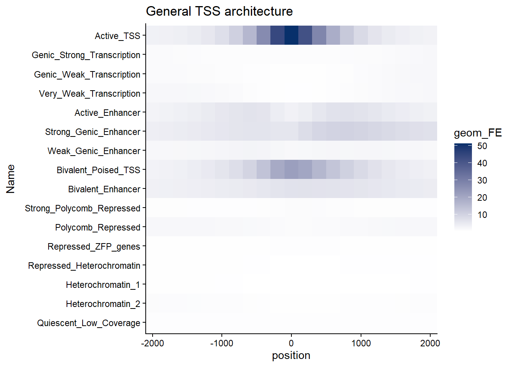
Enrichment across the states:
looking at enrichment of Features across the states by each group. This helps with the classification and interpretation of what each state represents.
DOX_24T_full <- read_delim("C:/Users/renee/Other_projects_data/DXR_data/overlap_enrichment_all/rerun_regions/24t_DOX_16.txt",
delim = "\t", escape_double = FALSE,
trim_ws = TRUE)%>% mutate(group="DOX_24T")
DOX_24R_full <- read_delim("C:/Users/renee/Other_projects_data/DXR_data/overlap_enrichment_all/rerun_regions/24R_DOX_16.txt",
delim = "\t", escape_double = FALSE,
trim_ws = TRUE)%>% mutate(group="DOX_24R")
DOX_144R_full <- read_delim("C:/Users/renee/Other_projects_data/DXR_data/overlap_enrichment_all/rerun_regions/144R_DOX_16.txt",
delim = "\t", escape_double = FALSE,
trim_ws = TRUE) %>% mutate(group="DOX_144R")
VEH_24T_full <- read_delim("C:/Users/renee/Other_projects_data/DXR_data/overlap_enrichment_all/rerun_regions/24t_VEH_16.txt",
delim = "\t", escape_double = FALSE,
trim_ws = TRUE)%>% mutate(group="VEH_24T")
VEH_24R_full <- read_delim("C:/Users/renee/Other_projects_data/DXR_data/overlap_enrichment_all/rerun_regions/24R_VEH_16.txt",
delim = "\t", escape_double = FALSE,
trim_ws = TRUE)%>% mutate(group="VEH_24R")
VEH_144R_full <- read_delim("C:/Users/renee/Other_projects_data/DXR_data/overlap_enrichment_all/rerun_regions/144R_VEH_16.txt",
delim = "\t", escape_double = FALSE,
trim_ws = TRUE)%>% mutate(group="VEH_144R") DOX_24T_rpt <- read_delim("C:/Users/renee/Other_projects_data/DXR_data/overlap_enrichment_all/RPTmasker_run/24t_DOX_16.txt",
delim = "\t", escape_double = FALSE,
trim_ws = TRUE)%>% mutate(group="DOX_24T")
DOX_24R_rpt <- read_delim("C:/Users/renee/Other_projects_data/DXR_data/overlap_enrichment_all/RPTmasker_run/24R_DOX_16.txt",
delim = "\t", escape_double = FALSE,
trim_ws = TRUE)%>% mutate(group="DOX_24R")
DOX_144R_rpt <- read_delim("C:/Users/renee/Other_projects_data/DXR_data/overlap_enrichment_all/RPTmasker_run/144R_DOX_16.txt",
delim = "\t", escape_double = FALSE,
trim_ws = TRUE) %>% mutate(group="DOX_144R")
VEH_24T_rpt <- read_delim("C:/Users/renee/Other_projects_data/DXR_data/overlap_enrichment_all/RPTmasker_run/24t_VEH_16.txt",
delim = "\t", escape_double = FALSE,
trim_ws = TRUE)%>% mutate(group="VEH_24T")
VEH_24R_rpt <- read_delim("C:/Users/renee/Other_projects_data/DXR_data/overlap_enrichment_all/RPTmasker_run/24R_VEH_16.txt",
delim = "\t", escape_double = FALSE,
trim_ws = TRUE)%>% mutate(group="VEH_24R")
VEH_144R_rpt <- read_delim("C:/Users/renee/Other_projects_data/DXR_data/overlap_enrichment_all/RPTmasker_run/144R_VEH_16.txt",
delim = "\t", escape_double = FALSE,
trim_ws = TRUE)%>% mutate(group="VEH_144R")
all_rptclean_states <-
VEH_144R_rpt %>%
bind_rows(DOX_144R_rpt) %>%
bind_rows(DOX_24R_rpt) %>%
bind_rows(VEH_24R_rpt) %>%
bind_rows(DOX_24T_rpt) %>%
bind_rows(VEH_24T_rpt)
just_rpt <- all_rptclean_states[,c("State (Emission order)","repeatmasker_clean.bed","group")]
just_rpt_long <- just_rpt %>%
dplyr::filter(`State (Emission order)` !="Base") %>%
left_join(States_anno, by=c(`State (Emission order)`="State")) %>%
pivot_longer(., cols=!c(`State (Emission order)`,group,Name,recode), names_to = "Identity",values_to = "Fold_enrichment") DOX_24T_gene <- read_delim("C:/Users/renee/Other_projects_data/DXR_data/16-internal-enrichment/24t_DOX_16.txt",
delim = "\t", escape_double = FALSE,
trim_ws = TRUE)%>% mutate(group="DOX_24T")
DOX_24R_gene <- read_delim("C:/Users/renee/Other_projects_data/DXR_data/16-internal-enrichment/24R_DOX_16.txt",
delim = "\t", escape_double = FALSE,
trim_ws = TRUE)%>% mutate(group="DOX_24R")
DOX_144R_gene <- read_delim("C:/Users/renee/Other_projects_data/DXR_data/16-internal-enrichment/144R_DOX_16.txt",
delim = "\t", escape_double = FALSE,
trim_ws = TRUE) %>% mutate(group="DOX_144R")
VEH_24T_gene <- read_delim("C:/Users/renee/Other_projects_data/DXR_data/16-internal-enrichment/24t_VEH_16.txt",
delim = "\t", escape_double = FALSE,
trim_ws = TRUE)%>% mutate(group="VEH_24T")
VEH_24R_gene <- read_delim("C:/Users/renee/Other_projects_data/DXR_data/16-internal-enrichment/24R_VEH_16.txt",
delim = "\t", escape_double = FALSE,
trim_ws = TRUE)%>% mutate(group="VEH_24R")
VEH_144R_gene <- read_delim("C:/Users/renee/Other_projects_data/DXR_data/16-internal-enrichment/144R_VEH_16.txt",
delim = "\t", escape_double = FALSE,
trim_ws = TRUE)%>% mutate(group="VEH_144R")
all_genes_states <-
VEH_144R_gene %>%
bind_rows(DOX_144R_gene) %>%
bind_rows(DOX_24R_gene) %>%
bind_rows(VEH_24R_gene) %>%
bind_rows(DOX_24T_gene) %>%
bind_rows(VEH_24T_gene) DOX_24T_ZFP <- read_delim("C:/Users/renee/Other_projects_data/DXR_data/overlap_enrichment_all/ZFP_run/24t_DOX_16.txt",
delim = "\t", escape_double = FALSE,
trim_ws = TRUE)%>% mutate(group="DOX_24T")
DOX_24R_ZFP <- read_delim("C:/Users/renee/Other_projects_data/DXR_data/overlap_enrichment_all/ZFP_run/24R_DOX_16.txt",
delim = "\t", escape_double = FALSE,
trim_ws = TRUE)%>% mutate(group="DOX_24R")
DOX_144R_ZFP <- read_delim("C:/Users/renee/Other_projects_data/DXR_data/overlap_enrichment_all/ZFP_run/144R_DOX_16.txt",
delim = "\t", escape_double = FALSE,
trim_ws = TRUE) %>% mutate(group="DOX_144R")
VEH_24T_ZFP <- read_delim("C:/Users/renee/Other_projects_data/DXR_data/overlap_enrichment_all/ZFP_run/24t_VEH_16.txt",
delim = "\t", escape_double = FALSE,
trim_ws = TRUE)%>% mutate(group="VEH_24T")
VEH_24R_ZFP <- read_delim("C:/Users/renee/Other_projects_data/DXR_data/overlap_enrichment_all/ZFP_run/24R_VEH_16.txt",
delim = "\t", escape_double = FALSE,
trim_ws = TRUE)%>% mutate(group="VEH_24R")
VEH_144R_ZFP <- read_delim("C:/Users/renee/Other_projects_data/DXR_data/overlap_enrichment_all/ZFP_run/144R_VEH_16.txt",
delim = "\t", escape_double = FALSE,
trim_ws = TRUE)%>% mutate(group="VEH_144R")
all_ZFPs_states <-
VEH_144R_ZFP %>%
bind_rows(DOX_144R_ZFP) %>%
bind_rows(DOX_24R_ZFP) %>%
bind_rows(VEH_24R_ZFP) %>%
bind_rows(DOX_24T_ZFP) %>%
bind_rows(VEH_24T_ZFP)
just_ZFP <- all_ZFPs_states[,c("State (Emission order)","ZFP_proteins.bed","group")]
just_ZFP %>%
dplyr::filter(`State (Emission order)` !="Base")# A tibble: 96 × 3
`State (Emission order)` ZFP_proteins.bed group
<chr> <dbl> <chr>
1 E2 0.212 VEH_144R
2 E1 0.712 VEH_144R
3 E4 2.06 VEH_144R
4 E3 1.82 VEH_144R
5 E9 0.745 VEH_144R
6 E7 0.649 VEH_144R
7 E8 0.774 VEH_144R
8 E6 0.764 VEH_144R
9 E5 0.561 VEH_144R
10 E11 1.64 VEH_144R
# ℹ 86 more rowsDOX_24T_KZFP <- read_delim("C:/Users/renee/Other_projects_data/DXR_data/overlap_enrichment_all/KZFP_run/24t_DOX_16.txt",
delim = "\t", escape_double = FALSE,
trim_ws = TRUE)%>% mutate(group="DOX_24T")
DOX_24R_KZFP <- read_delim("C:/Users/renee/Other_projects_data/DXR_data/overlap_enrichment_all/KZFP_run/24R_DOX_16.txt",
delim = "\t", escape_double = FALSE,
trim_ws = TRUE)%>% mutate(group="DOX_24R")
DOX_144R_KZFP <- read_delim("C:/Users/renee/Other_projects_data/DXR_data/overlap_enrichment_all/KZFP_run/144R_DOX_16.txt",
delim = "\t", escape_double = FALSE,
trim_ws = TRUE) %>% mutate(group="DOX_144R")
VEH_24T_KZFP <- read_delim("C:/Users/renee/Other_projects_data/DXR_data/overlap_enrichment_all/KZFP_run/24t_VEH_16.txt",
delim = "\t", escape_double = FALSE,
trim_ws = TRUE)%>% mutate(group="VEH_24T")
VEH_24R_KZFP <- read_delim("C:/Users/renee/Other_projects_data/DXR_data/overlap_enrichment_all/KZFP_run/24R_VEH_16.txt",
delim = "\t", escape_double = FALSE,
trim_ws = TRUE)%>% mutate(group="VEH_24R")
VEH_144R_KZFP <- read_delim("C:/Users/renee/Other_projects_data/DXR_data/overlap_enrichment_all/KZFP_run/144R_VEH_16.txt",
delim = "\t", escape_double = FALSE,
trim_ws = TRUE)%>% mutate(group="VEH_144R")
all_KZFPs_states <-
VEH_144R_KZFP %>%
bind_rows(DOX_144R_KZFP) %>%
bind_rows(DOX_24R_KZFP) %>%
bind_rows(VEH_24R_KZFP) %>%
bind_rows(DOX_24T_KZFP) %>%
bind_rows(VEH_24T_KZFP)
just_KZFP <- all_KZFPs_states[,c("State (Emission order)","KZFP.bed","group")]DOX_24T_ATAC <- read_delim("C:/Users/renee/Other_projects_data/DXR_data/overlap_enrichment_all/ATAC_run/24t_DOX_16.txt",
delim = "\t", escape_double = FALSE,
trim_ws = TRUE)%>% mutate(group="DOX_24T")
DOX_24R_ATAC <- read_delim("C:/Users/renee/Other_projects_data/DXR_data/overlap_enrichment_all/ATAC_run/24R_DOX_16.txt",
delim = "\t", escape_double = FALSE,
trim_ws = TRUE)%>% mutate(group="DOX_24R")
DOX_144R_ATAC <- read_delim("C:/Users/renee/Other_projects_data/DXR_data/overlap_enrichment_all/ATAC_run/144R_DOX_16.txt",
delim = "\t", escape_double = FALSE,
trim_ws = TRUE) %>% mutate(group="DOX_144R")
VEH_24T_ATAC <- read_delim("C:/Users/renee/Other_projects_data/DXR_data/overlap_enrichment_all/ATAC_run/24t_VEH_16.txt",
delim = "\t", escape_double = FALSE,
trim_ws = TRUE)%>% mutate(group="VEH_24T")
VEH_24R_ATAC <- read_delim("C:/Users/renee/Other_projects_data/DXR_data/overlap_enrichment_all/ATAC_run/24R_VEH_16.txt",
delim = "\t", escape_double = FALSE,
trim_ws = TRUE)%>% mutate(group="VEH_24R")
VEH_144R_ATAC <- read_delim("C:/Users/renee/Other_projects_data/DXR_data/overlap_enrichment_all/ATAC_run/144R_VEH_16.txt",
delim = "\t", escape_double = FALSE,
trim_ws = TRUE)%>% mutate(group="VEH_144R")
all_ATAC_states <-
VEH_144R_ATAC %>%
bind_rows(DOX_144R_ATAC) %>%
bind_rows(DOX_24R_ATAC) %>%
bind_rows(VEH_24R_ATAC) %>%
bind_rows(DOX_24T_ATAC) %>%
bind_rows(VEH_24T_ATAC) %>%
left_join(.,States_anno, by = c(`State (Emission order)`="State"))DOX_24T_LTR <- read_delim("C:/Users/renee/Other_projects_data/DXR_data/overlap_enrichment_all/LTRfamily_run/24t_DOX_16.txt",
delim = "\t", escape_double = FALSE,
trim_ws = TRUE)%>% mutate(group="DOX_24T")
DOX_24R_LTR <- read_delim("C:/Users/renee/Other_projects_data/DXR_data/overlap_enrichment_all/LTRfamily_run/24R_DOX_16.txt",
delim = "\t", escape_double = FALSE,
trim_ws = TRUE)%>% mutate(group="DOX_24R")
DOX_144R_LTR <- read_delim("C:/Users/renee/Other_projects_data/DXR_data/overlap_enrichment_all/LTRfamily_run/144R_DOX_16.txt",
delim = "\t", escape_double = FALSE,
trim_ws = TRUE) %>% mutate(group="DOX_144R")
VEH_24T_LTR <- read_delim("C:/Users/renee/Other_projects_data/DXR_data/overlap_enrichment_all/LTRfamily_run/24t_VEH_16.txt",
delim = "\t", escape_double = FALSE,
trim_ws = TRUE)%>% mutate(group="VEH_24T")
VEH_24R_LTR <- read_delim("C:/Users/renee/Other_projects_data/DXR_data/overlap_enrichment_all/LTRfamily_run/24R_VEH_16.txt",
delim = "\t", escape_double = FALSE,
trim_ws = TRUE)%>% mutate(group="VEH_24R")
VEH_144R_LTR <- read_delim("C:/Users/renee/Other_projects_data/DXR_data/overlap_enrichment_all/LTRfamily_run/144R_VEH_16.txt",
delim = "\t", escape_double = FALSE,
trim_ws = TRUE)%>% mutate(group="VEH_144R")
all_LTR_states <-
VEH_144R_LTR %>%
bind_rows(DOX_144R_LTR) %>%
bind_rows(DOX_24R_LTR) %>%
bind_rows(VEH_24R_LTR) %>%
bind_rows(DOX_24T_LTR) %>%
bind_rows(VEH_24T_LTR) %>%
left_join(.,States_anno, by = c(`State (Emission order)`="State"))DOX_24T_LTR_ERV1 <- read_delim("C:/Users/renee/Other_projects_data/DXR_data/overlap_enrichment_all/LTR_ERV1_family_run/24t_DOX_16.txt",
delim = "\t", escape_double = FALSE,
trim_ws = TRUE)%>% mutate(group="DOX_24T")
DOX_24R_LTR_ERV1 <- read_delim("C:/Users/renee/Other_projects_data/DXR_data/overlap_enrichment_all/LTR_ERV1_family_run/24R_DOX_16.txt",
delim = "\t", escape_double = FALSE,
trim_ws = TRUE)%>% mutate(group="DOX_24R")
DOX_144R_LTR_ERV1 <- read_delim("C:/Users/renee/Other_projects_data/DXR_data/overlap_enrichment_all/LTR_ERV1_family_run/144R_DOX_16.txt",
delim = "\t", escape_double = FALSE,
trim_ws = TRUE) %>% mutate(group="DOX_144R")
VEH_24T_LTR_ERV1 <- read_delim("C:/Users/renee/Other_projects_data/DXR_data/overlap_enrichment_all/LTR_ERV1_family_run/24t_VEH_16.txt",
delim = "\t", escape_double = FALSE,
trim_ws = TRUE)%>% mutate(group="VEH_24T")
VEH_24R_LTR_ERV1 <- read_delim("C:/Users/renee/Other_projects_data/DXR_data/overlap_enrichment_all/LTR_ERV1_family_run/24R_VEH_16.txt",
delim = "\t", escape_double = FALSE,
trim_ws = TRUE)%>% mutate(group="VEH_24R")
VEH_144R_LTR_ERV1 <- read_delim("C:/Users/renee/Other_projects_data/DXR_data/overlap_enrichment_all/LTR_ERV1_family_run/144R_VEH_16.txt",
delim = "\t", escape_double = FALSE,
trim_ws = TRUE)%>% mutate(group="VEH_144R")
all_LTR_ERV1_states <-
VEH_144R_LTR_ERV1 %>%
bind_rows(DOX_144R_LTR_ERV1) %>%
bind_rows(DOX_24R_LTR_ERV1) %>%
bind_rows(VEH_24R_LTR_ERV1) %>%
bind_rows(DOX_24T_LTR_ERV1) %>%
bind_rows(VEH_24T_LTR_ERV1) %>%
left_join(.,States_anno, by = c(`State (Emission order)`="State"))all_files_states <-
VEH_144R_full %>%
bind_rows(DOX_144R_full) %>%
bind_rows(DOX_24R_full) %>%
bind_rows(VEH_24R_full) %>%
bind_rows(DOX_24T_full) %>%
bind_rows(VEH_24T_full) %>%
left_join(.,States_anno, by = c(`State (Emission order)`="State"))
long_file <- all_files_states %>%
dplyr::select(`State (Emission order)`,
`Genome %`,
`GRCh38-cCREs.bed`,
`SCREEN_hg38_CA-CTCF.bed`:SCREEN_hg38_pELS.bed,
Set_1_H3K27ac_ROI.bed:Set_3_H3K27ac_ROI.bed,
all_H3K27ac_H3K27ac_ROI.bed,
LINE_rptmasker.bed,
SINE_rptmasker.bed,
LTR_rptmasker.bed,
DNA_rptmasker.bed,
Retroposon_rptmasker.bed,
RC_rptmasker.bed,
Low_complexity_rptmasker.bed,
RNA_rptmasker.bed,
Satellite_rptmasker.bed,
Simple_repeat_rptmasker.bed,
Unknown_rptmasker.bed,
rRNA_rptmasker.bed:group,Name,recode) %>%
mutate(`State (Emission order)`=factor(`State (Emission order)`, levels = c(paste0("E", 1:16),"Base"))) %>%
dplyr::filter(`State (Emission order)` != "Base") %>%
pivot_longer(., cols=!c(`State (Emission order)`,group,Name,recode), names_to = "Identity",values_to = "Fold_enrichment") %>%
mutate(Identity=str_remove(Identity,".bed")) %>%
mutate(Identity=factor(Identity,
levels=c("Genome %",
"GRCh38-cCREs",
"SCREEN_hg38_CA-CTCF",
"SCREEN_hg38_CA-H3K4me3",
"SCREEN_hg38_CA-TF",
"SCREEN_hg38_CA",
"SCREEN_hg38_PLS",
"SCREEN_hg38_TF",
"SCREEN_hg38_pELS",
"SCREEN_hg38_dELS",
"all_H3K27ac_H3K27ac_ROI",
"Set_1_H3K27ac_ROI",
"Set_2_H3K27ac_ROI",
"Set_3_H3K27ac_ROI",
"LINE_rptmasker",
"SINE_rptmasker",
"LTR_rptmasker",
"DNA_rptmasker",
"Retroposon_rptmasker",
"RC_rptmasker",
"Low_complexity_rptmasker",
"RNA_rptmasker",
"Satellite_rptmasker",
"Simple_repeat_rptmasker",
"Unknown_rptmasker",
"rRNA_rptmasker",
"scRNA_rptmasker",
"snRNA_rptmasker",
"srpRNA_rptmasker",
"tRNA_rptmasker"))) %>%
mutate(group=factor(group,levels=c("VEH_24T","VEH_24R","VEH_144R","DOX_24T", "DOX_24R", "DOX_144R"))) # columns to pivot (exclude ID columns)
id_cols <- c("State (Emission order)", "group","Name","recode")
all_genes_states_long <-
all_genes_states %>%
mutate(`State (Emission order)`=paste0("E",`State (Emission order)`)) %>%
left_join(just_ZFP) %>%
left_join(just_KZFP) %>%
left_join(.,States_anno, by = c(`State (Emission order)`="State")) %>%
mutate(`State (Emission order)` = factor(`State (Emission order)`,
levels = c(paste0("E",1:16),"EBase"))) %>%
filter(`State (Emission order)` != "EBase") %>%
pivot_longer(
cols = -all_of(id_cols),
names_to = "Identity",
values_to = "Fold_enrichment"
) %>%
# preserve original order
mutate(Identity = factor(Identity, levels =c( names(all_genes_states)[!names(all_genes_states) %in% id_cols],"ZFP_proteins.bed","KZFP.bed"))) %>%
# create cleaned label for plotting
mutate(Identity_label = case_when(
str_detect(Identity, "\\.hg38\\.bed\\.gz$") ~ str_remove(Identity, "\\.hg38\\.bed\\.gz$"),
str_detect(Identity, "\\.bed$") ~ str_remove(Identity, "\\.bed$"),
TRUE ~ Identity # keep everything else unchanged
),
group = factor(group,
levels = c("VEH_24T","VEH_24R","VEH_144R",
"DOX_24T","DOX_24R","DOX_144R")))
final_order <- unique(all_genes_states_long$Identity_label)
all_genes_states_long <- all_genes_states_long %>%
mutate(Identity_label=factor(Identity_label,levels=final_order))Looking a genomic features:
all_genes_states_long %>%
group_by(Identity) %>% # i.e. per annotation column
mutate(
FE_min = min(Fold_enrichment, na.rm = TRUE),
FE_max = max(Fold_enrichment, na.rm = TRUE),
chromhmm_scaled = (Fold_enrichment - FE_min) / (FE_max - FE_min)
) %>%
arrange(recode) %>%
mutate(
Name = factor(Name,
levels = unique(Name[order(recode)])) ) %>%
# ggplot(.,aes(x=Identity_label,y=`State (Emission order)`, fill=chromhmm_scaled))+
ggplot(.,aes(x=Identity_label,y=Name, fill=chromhmm_scaled))+
geom_tile(color = "grey9",
lwd = .1,
linetype = 1)+
scale_fill_gradient(
low = "white",
high = "#08306B",
limits = c(0, 1), # <- KEY
oob = scales::squish,
na.value = "white", # <- this sets NAs to white
name = "transformed scale"
)+
theme(axis.text.x = element_text(angle = 45, hjust = 1))+
facet_wrap(~group, nrow=1, ncol=6)+
scale_y_discrete(limits=rev)+
ggtitle("Genic region enrichment across states")+
coord_fixed()
The genic enrichment across states plots shows the exact enrichment across each condition, however, for summary purposes, I wish to know the general enrichment from all conditions. I will take the geometric mean across DOX and VEH conditions (and all conditions) at each timepoint for each state and identity ( in this case for the CpGIslands, Exons, genes, TESs and TSS etc..). This treats the fold-change enrichment and depletion symmetrically about 1 because enrichment behaves multiplicatively since it is already a ratio. I am only using this to determine which states are constitutively TSS-enriched, with are CPG-biased, which are ZFP enriched etc…
geom_mean_df <- all_genes_states_long %>%
group_by(Identity, Identity_label, `State (Emission order)`) %>%
summarize(geom_FE = exp(mean(log(Fold_enrichment + 1e-6), na.rm = TRUE)),
.groups = "drop") %>%
group_by(Identity) %>%
mutate(
FE_min = min(geom_FE, na.rm = TRUE),
FE_max = max(geom_FE, na.rm = TRUE),
chromhmm_scaled = (geom_FE - FE_min) / (FE_max - FE_min))
ggplot(geom_mean_df,aes(x=Identity_label,y=`State (Emission order)`, fill=chromhmm_scaled))+
geom_tile(color = "grey9",
lwd = .1,
linetype = 1)+
scale_fill_gradient(
low = "white",
high = "#08306B",
limits = c(0, 1), # <- KEY
oob = scales::squish,
na.value = "white", # <- this sets NAs to white
name = "transformed scale"
)+
theme(axis.text.x = element_text(angle = 45, hjust = 1))+
scale_y_discrete(limits=rev)+
ggtitle("Genic region relative enrichment pattern across conditions\n (geometric mean)")+
coord_fixed()
| Version | Author | Date |
|---|---|---|
| a355837 | reneeisnowhere | 2026-02-16 |
geom_mean_df <- geom_mean_df %>% mutate(log2_FE = log2(geom_FE))
ggplot(geom_mean_df,
aes(x = Identity_label,
y = `State (Emission order)`,
fill = log2_FE)) +
geom_tile(color = "grey9", linewidth = 0.1) +
scale_fill_gradient2(
low = "darkgreen",
mid = "white",
high = "#08306B",
midpoint = 0,
name = "log2(Fold Enrichment)"
) +
scale_y_discrete(limits = rev) +
theme_minimal() +
theme(
axis.text.x = element_text(angle = 45, hjust = 1)
) +
ggtitle("Geometric Mean ChromHMM Enrichment Across Conditions")+
coord_fixed()
| Version | Author | Date |
|---|---|---|
| a355837 | reneeisnowhere | 2026-02-16 |
Poster future plots
full_states_data_long <- bind_rows(all_genes_states_long,long_file) %>%
bind_rows(.,just_rpt_long)
Identity_label_order <- c("Genome %", "CpGIsland","RefSeqGene","RefSeqTSS2kb","RefSeqTSS","RefSeqExon","RefSeqTES",
"KZFP","PLS","pELS","dELS", "repeatmasker_clean")
geom_df_reorderd <-
full_states_data_long %>%
mutate(Identity_label = case_when(
str_detect(Identity, "\\.hg38\\.bed\\.gz$") ~ str_remove(Identity, "\\.hg38\\.bed\\.gz$"),
str_detect(Identity, "\\.bed$") ~ str_remove(Identity, "\\.bed$"),
str_detect(Identity,"^SCREEN_hg38_")~ str_remove(Identity,"^SCREEN_hg38_"),
str_detect(Identity,"_rptmasker")~ str_remove(Identity,"_rptmasker"),
Identity =="all_H3K27ac_H3K27ac_ROI"~ "all_H3K27ac_regions",
TRUE ~ Identity # keep everything else unchanged
),
group = factor(group,
levels = c("VEH_24T","VEH_24R","VEH_144R",
"DOX_24T","DOX_24R","DOX_144R"))) %>%
dplyr::filter(Identity_label %in% Identity_label_order) %>%
arrange(recode) %>%
mutate(
Name = factor(Name,
levels = unique(Name[order(recode)])),
Identity_label=factor(Identity_label,levels=Identity_label_order)) %>%
group_by(Identity, Identity_label, Name) %>%
summarize(geom_FE = exp(mean(log(Fold_enrichment + 1e-6), na.rm = TRUE)),
.groups = "drop") %>%
group_by(Identity) %>%
mutate(
FE_min = min(geom_FE, na.rm = TRUE),
FE_max = max(geom_FE, na.rm = TRUE),
chromhmm_scaled = (geom_FE - FE_min) / (FE_max - FE_min))
ggplot(geom_df_reorderd,aes(x=Identity_label,y=Name, fill=chromhmm_scaled))+
geom_tile(color = "grey9",
lwd = .1,
linetype = 1)+
scale_fill_gradient(
low = "white",
high = "#08306B",
limits = c(0, 1), # <- KEY
oob = scales::squish,
na.value = "white", # <- this sets NAs to white
name = "transformed scale"
)+
theme(axis.text.x = element_text(angle = 45, hjust = 1))+
scale_y_discrete(limits=rev)+
ggtitle("Genic region relative enrichment pattern across conditions\n (geometric mean)")+
coord_fixed()
full_states_data_long %>%
mutate(Identity_label = case_when(
str_detect(Identity, "\\.hg38\\.bed\\.gz$") ~ str_remove(Identity, "\\.hg38\\.bed\\.gz$"),
str_detect(Identity, "\\.bed$") ~ str_remove(Identity, "\\.bed$"),
str_detect(Identity,"^SCREEN_hg38_")~ str_remove(Identity,"^SCREEN_hg38_"),
str_detect(Identity,"_rptmasker")~ str_remove(Identity,"_rptmasker"),
Identity =="all_H3K27ac_H3K27ac_ROI"~ "all_H3K27ac_regions",
TRUE ~ Identity # keep everything else unchanged
),
group = factor(group,
levels = c("VEH_24T","VEH_24R","VEH_144R",
"DOX_24T","DOX_24R","DOX_144R"))) %>%
dplyr::filter(Identity_label %in% Identity_label_order) %>%
arrange(recode) %>%
mutate(
Name = factor(Name,
levels = unique(Name[order(recode)])),
Identity_label=factor(Identity_label,levels=Identity_label_order)) %>%
group_by(Identity) %>% # i.e. per annotation column
mutate(
FE_min = min(Fold_enrichment, na.rm = TRUE),
FE_max = max(Fold_enrichment, na.rm = TRUE),
chromhmm_scaled = (Fold_enrichment - FE_min) / (FE_max - FE_min)
) %>%
ggplot(.,aes(x=Identity_label,y=Name, fill=chromhmm_scaled))+
geom_tile(color = "grey9",
lwd = .1,
linetype = 1)+
scale_fill_gradient(
low = "white",
high = "#08306B",
limits = c(0, 1), # <- KEY
oob = scales::squish,
na.value = "white", # <- this sets NAs to white
name = "transformed scale"
)+
theme(axis.text.x = element_text(angle = 45, hjust = 1))+
facet_wrap(~group, nrow=2, ncol=3)+
scale_y_discrete(limits=rev)+
ggtitle("Genic region enrichment across states")+
coord_fixed()
Identity_label_order_new <-c("Genome %", "CpGIsland","RefSeqGene","RefSeqTSS2kb","RefSeqTSS","RefSeqExon","RefSeqTES",
"KZFP","PLS","pELS","dELS", "repeatmasker_clean","SINE", "LINE","LTR","DNA","Retroposon")
# c("Genome %", "CpGIsland","RefSeqGene","RefSeqTSS2kb","RefSeqTSS","RefSeqExon","RefSeqTES", "KZFP","PLS","pELS","dELS", "SINE", "LINE","LTR","DNA","Retroposon")
geom_df_reorderd_new <-
full_states_data_long %>%
mutate(Identity_label = case_when(
str_detect(Identity, "\\.hg38\\.bed\\.gz$") ~ str_remove(Identity, "\\.hg38\\.bed\\.gz$"),
str_detect(Identity, "\\.bed$") ~ str_remove(Identity, "\\.bed$"),
str_detect(Identity,"^SCREEN_hg38_")~ str_remove(Identity,"^SCREEN_hg38_"),
str_detect(Identity,"_rptmasker")~ str_remove(Identity,"_rptmasker"),
Identity =="all_H3K27ac_H3K27ac_ROI"~ "all_H3K27ac_regions",
TRUE ~ Identity # keep everything else unchanged
),
group = factor(group,
levels = c("VEH_24T","VEH_24R","VEH_144R",
"DOX_24T","DOX_24R","DOX_144R"))) %>%
dplyr::filter(Identity_label %in% Identity_label_order_new) %>%
arrange(recode) %>%
mutate(
Name = factor(Name,
levels = unique(Name[order(recode)])),
Identity_label=factor(Identity_label,levels=Identity_label_order_new)) %>%
group_by(Identity, Identity_label, Name) %>%
summarize(geom_FE = exp(mean(log(Fold_enrichment + 1e-6), na.rm = TRUE)),
.groups = "drop") %>%
group_by(Identity) %>%
mutate(
FE_min = min(geom_FE, na.rm = TRUE),
FE_max = max(geom_FE, na.rm = TRUE),
chromhmm_scaled = (geom_FE - FE_min) / (FE_max - FE_min))
ggplot(geom_df_reorderd_new,aes(x=Identity_label,y=Name, fill=chromhmm_scaled))+
geom_tile(color = "grey9",
lwd = .1,
linetype = 1)+
scale_fill_gradient(
low = "white",
high = "#08306B",
limits = c(0, 1), # <- KEY
oob = scales::squish,
na.value = "white", # <- this sets NAs to white
name = "transformed scale"
)+
theme(axis.text.x = element_text(angle = 45, hjust = 1))+
scale_y_discrete(limits=rev)+
ggtitle("Genic annotations relative enrichment")+
coord_fixed()
geom_df_reorderd <- geom_df_reorderd %>% mutate(log2_FE = log2(geom_FE))
ggplot(geom_df_reorderd,
aes(x = Identity_label,
y = Name,
fill = log2_FE)) +
geom_tile(color = "grey9", linewidth = 0.1) +
scale_fill_gradient2(
low = "darkgreen",
mid = "white",
high = "#08306B",
midpoint = 0,
name = "log2(Fold Enrichment)"
) +
scale_y_discrete(limits = rev) +
theme_minimal() +
theme(
axis.text.x = element_text(angle = 45, hjust = 1)
) +
ggtitle("Geometric Mean ChromHMM Enrichment Across Conditions")+
coord_fixed()
delta_df_reorderd_new <-
full_states_data_long %>%
mutate(log2_FE = log2(Fold_enrichment + 1e-6)) %>%
tidyr::separate(group, into=c("trt","time"), remove = FALSE) %>%
mutate(Identity_label = case_when(
str_detect(Identity, "\\.hg38\\.bed\\.gz$") ~ str_remove(Identity, "\\.hg38\\.bed\\.gz$"),
str_detect(Identity, "\\.bed$") ~ str_remove(Identity, "\\.bed$"),
str_detect(Identity,"^SCREEN_hg38_")~ str_remove(Identity,"^SCREEN_hg38_"),
str_detect(Identity,"_rptmasker")~ str_remove(Identity,"_rptmasker"),
Identity =="all_H3K27ac_H3K27ac_ROI"~ "all_H3K27ac_regions",
TRUE ~ Identity # keep everything else unchanged
),
group = factor(group,
levels = c("VEH_24T","VEH_24R","VEH_144R",
"DOX_24T","DOX_24R","DOX_144R"))) %>%
dplyr::filter(Identity_label %in% Identity_label_order_new) %>%
arrange(recode) %>%
mutate(
Name = factor(Name,
levels = unique(Name[order(recode)])),
Identity_label=factor(Identity_label,levels=Identity_label_order_new)) %>%
filter(Identity != "Genome %") %>%
group_by(time, Identity, Identity_label,Name) %>%
summarise(
delta_log2FE =
log2_FE[trt == "DOX"] -
log2_FE[trt == "VEH"],
.groups = "drop") %>%
mutate(time=factor(time, levels=c("24T","24R","144R")))scaled_df_reorderd_new <- delta_df_reorderd_new %>%
dplyr::filter(Identity_label%in% c("repeatmasker_clean","LINE","SINE","LTR","DNA","Retroposon")) %>%
group_by(time) %>%
mutate(
scale_factor = quantile(abs(delta_log2FE), 0.9, na.rm = TRUE),
delta_plot = delta_log2FE / scale_factor,
delta_plot = pmax(pmin(delta_plot, 1), -1) # clamp to [-1, 1]
) %>%
ungroup()
ggplot(scaled_df_reorderd_new,
aes(x = Identity_label,
y = Name,
fill = delta_plot)) +
geom_tile(color = "grey9", linewidth = 0.1) +
scale_fill_gradient2(
low = "#053061",
mid = "white",
high = "#67001F",
midpoint = 0,
name = "log2(DOX / VEH)"
) +
facet_wrap(~time, nrow = 1) +
scale_y_discrete(limits = rev) +
theme_minimal() +
theme(axis.text.x = element_text(angle = 45, hjust = 1))+
ggtitle("Delta of log2(DOX/VEH) at each timepoint, \nscaled to column min max")
Now I want to look at the change of log2 Fold enrichment of DOX -VEH at each timepoint
df_1 <- all_genes_states_long %>%
mutate(log2_FE = log2(Fold_enrichment + 1e-6),
Name = factor(Name,
levels = unique(Name[order(recode)]))) %>%
separate(group, into = c("trt","time"), remove = FALSE)
delta_df_1 <- df_1 %>%
group_by(time, Identity, Identity_label,Name) %>%
summarise(
delta_log2FE =
log2_FE[trt == "DOX"] -
log2_FE[trt == "VEH"],
.groups = "drop") %>%
mutate(time=factor(time, levels=c("24T","24R","144R")))
ggplot(delta_df_1,
aes(x = Identity_label,
y = Name,
fill = delta_log2FE)) +
geom_tile(color = "grey9", linewidth = 0.1) +
scale_fill_gradient2(
low = "#053061",
mid = "white",
high = "#67001F",
midpoint = 0,
name = "log2(DOX / VEH)"
) +
facet_wrap(~time, nrow = 1) +
scale_y_discrete(limits = rev) +
theme_minimal() +
theme(axis.text.x = element_text(angle = 45, hjust = 1))+
ggtitle("Delta of log2(DOX/VEH) at each timepoint")
Enhancer plot
long_file %>%
dplyr::filter(stringr::str_detect(Identity, "SCREEN")) %>%
group_by(Identity) %>% # i.e. per annotation column
mutate(
FE_min = min(Fold_enrichment, na.rm = TRUE),
FE_max = max(Fold_enrichment, na.rm = TRUE),
chromhmm_scaled = (Fold_enrichment - FE_min) / (FE_max - FE_min),
Name = factor(Name,
levels = unique(Name[order(recode)]))) %>%
ggplot(.,aes(x=Identity,y=Name, fill=chromhmm_scaled))+
geom_tile(color = "grey9",
lwd = .1,
linetype = 1)+
scale_fill_gradient(
low = "white",
high = "#08306B",
limits = c(0, 1), # <- KEY
oob = scales::squish,
na.value = "white", # <- this sets NAs to white
name = "transformed scale"
)+
theme(axis.text.x = element_text(angle = 45, hjust = 1))+
facet_wrap(~group, nrow=1, ncol=6)+
scale_y_discrete(limits=rev)+
ggtitle("All Enhancer types enrichment across states")+
coord_fixed()
Cormotif set enrichment across states
Each Histone will have slices of their own states. Here are all sets next to all states
order <- c("Genome %",
"all_H3K27ac_H3K27ac_ROI.bed",
"Set_1_H3K27ac_ROI.bed" ,
"Set_2_H3K27ac_ROI.bed",
"Set_3_H3K27ac_ROI.bed",
"all_H3K36me3_regions_H3K36me3_ROI.bed",
"Set_1_H3K36me3_ROI.bed",
"Set_2_H3K36me3_ROI.bed",
"all_H3K27me3_regions_H3K27me3_ROI.bed",
"Set_1_H3K27me3_ROI.bed",
"Set_2_H3K27me3_ROI.bed" ,
"all_H3K9me3_regions_H3K9me3_ROI.bed",
"Set_1_H3K9me3_ROI.bed",
"Set_2_H3K9me3_ROI.bed",
"Set_3_H3K9me3_ROI.bed" ,
"ZFP_proteins.bed")
all_ZFPs_states %>%
mutate(
`State (Emission order)` = as.character(`State (Emission order)`),
`State (Emission order)` = case_when(
`State (Emission order)` %in% as.character(1:16) ~ paste0("E", `State (Emission order)`),
TRUE ~ `State (Emission order)`)) %>%
mutate(`State (Emission order)` = factor(`State (Emission order)`,
levels = c(paste0("E",1:16), "Base"))) %>%
filter(`State (Emission order)` != "Base") %>%
left_join(.,States_anno, by = c(`State (Emission order)`="State")) %>%
mutate(Name = factor(Name,
levels = unique(Name[order(recode)]))) %>%
pivot_longer(., -c(`State (Emission order)`,group, recode, Name), names_to = "Identity", values_to="Fold_enrichment") %>%
mutate(group=factor(group,levels=c("VEH_24T","VEH_24R","VEH_144R","DOX_24T", "DOX_24R", "DOX_144R"))) %>%
mutate(Identity=factor(Identity, levels=order),
) %>%
dplyr::filter(Identity!="ZFP_proteins.bed") %>%
group_by(Identity) %>% # i.e. per annotation column
mutate(
FE_min = min(Fold_enrichment, na.rm = TRUE),
FE_max = max(Fold_enrichment, na.rm = TRUE),
chromhmm_scaled = (Fold_enrichment - FE_min) / (FE_max - FE_min)
) %>%
ggplot(.,aes(x=Identity,y=Name, fill=chromhmm_scaled))+
geom_tile(color = "grey9",
lwd = .1,
linetype = 1)+
scale_fill_gradient(
low = "white",
high = "#08306B",
limits = c(0, 1), # <- KEY
oob = scales::squish,
na.value = "white", # <- this sets NAs to white
name = "transformed scale"
)+
theme(axis.text.x = element_text(angle = 45, hjust = 1))+
facet_wrap(~group, nrow=2, ncol=3)+
scale_y_discrete(limits=rev)+
ggtitle("Cormotif across states")+
coord_fixed()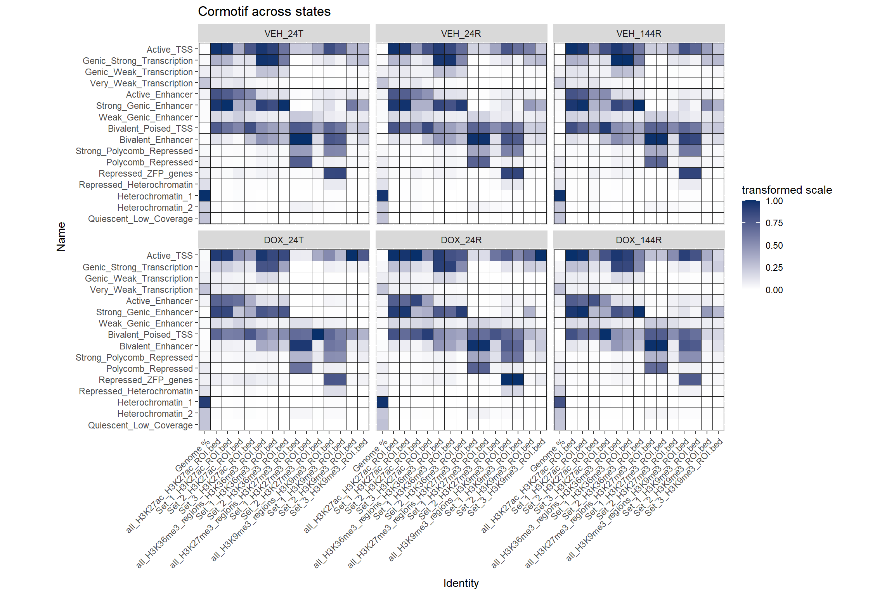
all_ZFPs_states %>%
mutate(
`State (Emission order)` = as.character(`State (Emission order)`),
`State (Emission order)` = case_when(
`State (Emission order)` %in% as.character(1:16) ~ paste0("E", `State (Emission order)`),
TRUE ~ `State (Emission order)`)) %>%
mutate(`State (Emission order)` = factor(`State (Emission order)`,
levels = c(paste0("E",1:16), "Base"))) %>%
filter(`State (Emission order)` != "Base") %>%
left_join(States_anno, by = c("State (Emission order)"="State")) %>%
mutate(Name = factor(Name,
levels = States_anno %>%
arrange(recode) %>%
pull(Name))) %>%
pivot_longer(., -c(`State (Emission order)`,group, recode, Name), names_to = "Identity", values_to="Fold_enrichment") %>%
mutate(group=factor(group,levels=c("VEH_24T","VEH_24R","VEH_144R","DOX_24T", "DOX_24R", "DOX_144R"))) %>%
mutate(Identity=factor(Identity, levels=order),
) %>%
dplyr::filter(Identity!="ZFP_proteins.bed") %>%
# dplyr::filter(!Identity %in% c("all_H3K36me3_regions_H3K36me3_ROI.bed",
# "Set_1_H3K36me3_ROI.bed",
# "Set_2_H3K36me3_ROI.bed",
# "all_H3K27me3_regions_H3K27me3_ROI.bed",
# "Set_1_H3K27me3_ROI.bed",
# "Set_2_H3K27me3_ROI.bed")) %>%
mutate(Identity=str_remove( Identity,"_ROI.bed")) %>%
group_by(Identity) %>% # i.e. per annotation column
mutate(
FE_min = min(Fold_enrichment, na.rm = TRUE),
FE_max = max(Fold_enrichment, na.rm = TRUE),
chromhmm_scaled = (Fold_enrichment - FE_min) / (FE_max - FE_min)
) %>%
ggplot(.,aes(x=Identity,y=Name, fill=chromhmm_scaled))+
geom_tile(color = "grey9",
lwd = .1,
linetype = 1)+
scale_fill_gradient(
low = "white",
high = "#08306B",
limits = c(0, 1), # <- KEY
oob = scales::squish,
na.value = "white", # <- this sets NAs to white
name = "transformed scale"
)+
theme(axis.text.x = element_text(angle = 45, hjust = 1))+
scale_y_discrete(limits=rev)+
ggtitle("Cormotif across states")+
coord_fixed()
plots_ZFP_long <- all_ZFPs_states %>%
mutate(
`State (Emission order)` = as.character(`State (Emission order)`),
`State (Emission order)` = case_when(
`State (Emission order)` %in% as.character(1:16) ~ paste0("E", `State (Emission order)`),
TRUE ~ `State (Emission order)`)) %>%
mutate(`State (Emission order)` = factor(`State (Emission order)`,
levels = c(paste0("E",1:16), "Base"))) %>%
filter(`State (Emission order)` != "Base") %>%
left_join(.,States_anno, by = c(`State (Emission order)`="State")) %>%
mutate(Name = factor(Name,
levels = unique(Name[order(recode)]))) %>%
pivot_longer(., -c(`State (Emission order)`,group, recode, Name), names_to = "Identity", values_to="Fold_enrichment") %>%
mutate(group=factor(group,levels=c("VEH_24T","VEH_24R","VEH_144R","DOX_24T", "DOX_24R", "DOX_144R"))) %>%
mutate(Identity=factor(Identity, levels=order),
ID = sub("^(.*?H3K[0-9]+[a-zA-Z0-9]*)\\.?.*$", "\\1", Identity),### grabs everything up to the final H3* and removes the last bit
ID = factor(ID,
levels = unique(ID[order(Identity)]))) %>%
group_by(ID) %>% # i.e. per annotation column
mutate(
FE_min = min(Fold_enrichment, na.rm = TRUE),
FE_max = max(Fold_enrichment, na.rm = TRUE),
chromhmm_scaled = (Fold_enrichment - FE_min) / (FE_max - FE_min)
) %>%
mutate(log2_FE = log2(Fold_enrichment + 1e-6)) %>%
separate(group, into = c("trt","time"), remove = FALSE) %>%
group_by(time, ID ,Name) %>%
summarise(
delta_log2FE =
log2_FE[trt == "DOX"] -
log2_FE[trt == "VEH"],
.groups = "drop") %>%
mutate(time=factor(time, levels=c("24T","24R","144R"))) %>%
dplyr::filter(!(ID %in% list("Genome %","ZFP_proteins.bed")))
ggplot(plots_ZFP_long,aes(x = ID,
y = Name,
fill = delta_log2FE)) +
geom_tile(color = "grey9", linewidth = 0.1) +
scale_fill_gradient2(
low = "#053061",
mid = "white",
high = "#67001F",
midpoint = 0,
name = "log2(DOX / VEH)"
) +
facet_wrap(~time, nrow = 1) +
scale_y_discrete(limits = rev) +
theme_minimal() +
theme(axis.text.x = element_text(angle = 45, hjust = 1))+
ggtitle("Delta of log2(DOX/VEH) at each timepoint")
| Version | Author | Date |
|---|---|---|
| 461660c | reneeisnowhere | 2026-03-12 |
long_file %>%
dplyr::filter(stringr::str_detect(Identity, "_rptmasker")) %>%
mutate(rpt=case_when(Identity=="LINE_rptmasker"~"LINE",
Identity=="SINE_rptmasker"~"SINE",
Identity=="LTR_rptmasker"~"LTR",
Identity=="DNA_rptmasker"~"DNA",
Identity=="Retroposon_rptmasker"~"SVA",
TRUE~"Other")) %>%
dplyr::filter(rpt != "Other") %>%
group_by(Identity) %>% # i.e. per annotation column
mutate(
FE_min = min(Fold_enrichment, na.rm = TRUE),
FE_max = max(Fold_enrichment, na.rm = TRUE),
chromhmm_scaled = (Fold_enrichment - FE_min) / (FE_max - FE_min),
Name = factor(Name,
levels = unique(Name[order(recode)]))) %>%
ggplot(.,aes(x=rpt,y=Name, fill=chromhmm_scaled))+
geom_tile(color = "grey9",
lwd = .1,
linetype = 1)+
scale_fill_gradient(
low = "white",
high = "#08306B",
limits = c(0, 1), # <- KEY
oob = scales::squish,
na.value = "white", # <- this sets NAs to white
name = "transformed scale"
)+
theme(axis.text.x = element_text(angle = 45, hjust = 1))+
facet_wrap(~group, nrow=2, ncol=3)+
scale_y_discrete(limits=rev)+
ggtitle("Transposable elements across states")+
coord_fixed()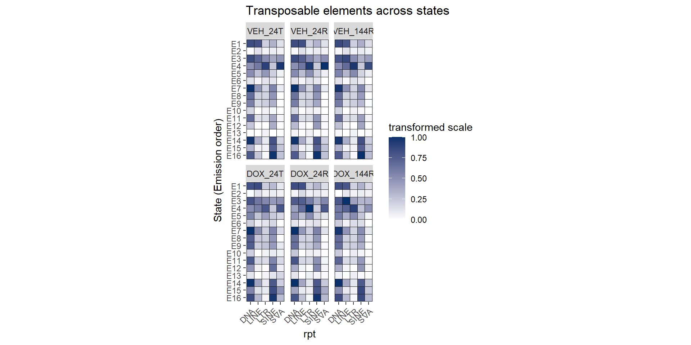
Looking at Delta TEs
Now using the delta of DOX-VEH (the log2 FE of each) and plotting the states
name_levels <- long_file %>%
arrange(recode) %>%
pull(Name) %>%
unique()
delta_TE_df <- long_file %>%
dplyr::filter(stringr::str_detect(Identity, "_rptmasker")) %>%
mutate(rpt=case_when(Identity=="LINE_rptmasker"~"LINE",
Identity=="SINE_rptmasker"~"SINE",
Identity=="LTR_rptmasker"~"LTR",
Identity=="DNA_rptmasker"~"DNA",
Identity=="Retroposon_rptmasker"~"SVA",
TRUE~"Other"),
Name = factor(Name,
levels = unique(Name[order(recode)]))) %>%
mutate(log2_FE = log2(Fold_enrichment + 1e-6)) %>%
separate(group, into = c("trt","time"), remove = FALSE) %>%
dplyr::filter(rpt != "Other") %>%
group_by(time, rpt,Name) %>%
summarise(
delta_log2FE =
log2_FE[trt == "DOX"] -
log2_FE[trt == "VEH"],
.groups = "drop") %>%
group_by(time) %>%
mutate(
scale_factor = quantile(abs(delta_log2FE), 0.9, na.rm = TRUE),
delta_plot = delta_log2FE / scale_factor,
delta_plot = pmax(pmin(delta_plot, 1), -1)
) %>%
ungroup() %>%
mutate(time=factor(time, levels=c("24T","24R","144R")))
ggplot(delta_TE_df ,
aes(x = time,
y = Name,
fill = delta_plot)) +
geom_tile(color = "grey20", linewidth = 0.2) +
scale_fill_gradient2(
low = "#2166AC", # Decrease
mid = "white", # No change
high = "#B2182B", # Increase
midpoint = 0,
# limits = c(-4.5, 4.5),
name = "Δ log2(FE)\n(DOX - VEH)"
) +
labs(
x = "Timepoint",
y = "ChromHMM State",
title = "TE Enrichment Changes After DNA Damage"
) +
facet_wrap(~rpt, ncol = 5) + # one facet per TE type
theme_minimal(base_size = 14) +
theme(
axis.text.x = element_text(angle = 45, hjust = 1),
axis.text.y = element_text(face = "bold"),
strip.text = element_text(face = "bold"),
plot.title = element_text(face = "bold", hjust = 0.5)
) +
coord_fixed(ratio = 1.2)+
scale_y_discrete(limits=rev)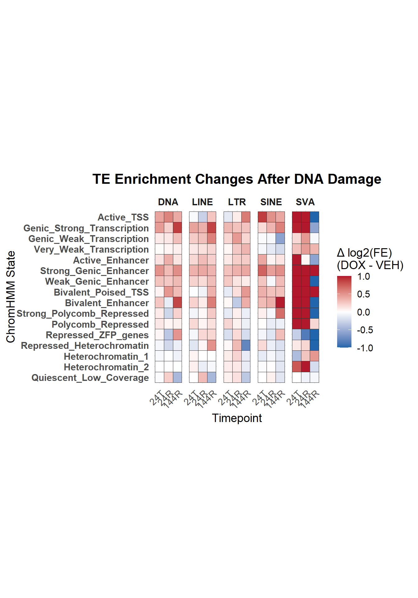
TE_delta_df <- delta_TE_df %>%
# filter(rpt %in% c("LTR","LINE","SINE","DNA","SVA")) %>%
filter(rpt %in% c("LTR")) %>%
mutate(
# `State (Emission order)` = forcats::fct_rev(`State (Emission order)`),
time = factor(time, levels = c("24T","24R","144R"))
) %>%
group_by(rpt) %>%
mutate(
# scale relative to max abs value per TE
delta_log2FE_scaled = delta_log2FE / max(abs(delta_log2FE), na.rm = TRUE),
# ensure no value goes outside -1..1
delta_log2FE_scaled = pmax(pmin(delta_log2FE_scaled, .5), -.5)
) %>%
ungroup()
# Scale across the entire dataset
# max_abs_delta <- max(abs(TE_delta_df$delta_log2FE_scaled), na.rm = TRUE)
# TE_delta_df <- TE_delta_df %>%
# mutate(delta_log2FE_scaled = delta_log2FE / max_abs_delta)
ggplot(TE_delta_df,
aes(x = time,
y = Name,
fill = delta_log2FE)) +
geom_tile(color = "grey20", linewidth = 0.2) +
scale_fill_gradient2(
low = "#2166AC",
mid = "white",
high = "#B2182B",
midpoint = 0,
limits = c(-.5, .5),
oob = scales::squish,
name = "Δ log2(FE)\n"
)+
facet_wrap(~rpt, ncol = 5) + # one TE type per facet
theme_minimal(base_size = 14) +
theme(
axis.text.x = element_text(angle = 45, hjust = 1),
strip.text = element_text(face = "bold"),
plot.title = element_text(face = "bold", hjust = 0.5)
) +
labs(
x = "Timepoint",
y = "ChromHMM State",
title = "Scaled Δ log2(FE) per TE type after DNA damage"
) +
scale_y_discrete(limits=rev)+
coord_fixed(ratio = 1.2)
An LTR look
order_LTR <- c("All_LTRs","ERV1","ERVL","ERVK","ERVL-MaLR","Gypsy","LTR")
plots_LTR_long <-all_LTR_states %>%
mutate(`State (Emission order)` = as.character(`State (Emission order)`),
`State (Emission order)` = case_when(
`State (Emission order)` %in% as.character(1:16) ~ paste0("E", `State (Emission order)`),
TRUE ~ `State (Emission order)`)) %>%
mutate(`State (Emission order)` = factor(`State (Emission order)`,levels = c(paste0("E",1:16), "Base"))) %>%
filter(`State (Emission order)` != "Base")%>%
mutate(Name = factor(Name,
levels = unique(Name[order(recode)]))) %>%
pivot_longer(., -c(`State (Emission order)`,group, recode, Name), names_to = "Identity", values_to="Fold_enrichment") %>%
mutate(group=factor(group,levels=c("VEH_24T","VEH_24R","VEH_144R","DOX_24T", "DOX_24R", "DOX_144R"))) %>%
mutate(ID = case_when(
Identity == "LTR_rptmasker.bed" ~ paste("All_LTRs"),
str_detect(Identity, "_rptmasker") ~ str_remove(Identity, "_rptmasker.*$"),
TRUE ~ Identity))%>%
dplyr::filter(!(ID %in% list("Genome %","ZFP_proteins.bed"))) %>%
mutate(ID = factor(ID,
levels = order_LTR))%>%
group_by(ID) %>% # i.e. per annotation column
mutate(log2_FE = log2(Fold_enrichment + 1e-8)) %>%
separate(group, into = c("trt","time"), remove = FALSE) %>%
group_by(time, ID ,Name) %>%
summarise(
delta_log2FE =
mean(log2_FE[trt == "DOX"], na.rm = TRUE) -
mean(log2_FE[trt == "VEH"], na.rm = TRUE),
.groups = "drop") %>%
mutate(time=factor(time, levels=c("24T","24R","144R")))
ggplot(plots_LTR_long,aes(x = ID,
y = Name,
fill = delta_log2FE)) +
geom_tile(color = "grey9", linewidth = 0.1) +
scale_fill_gradient2(
low = "#053061",
mid = "white",
high = "#67001F",
midpoint = 0,
name = "log2(DOX / VEH)"
) +
facet_wrap(~time, nrow = 1) +
scale_y_discrete(limits = rev) +
theme_minimal() +
theme(axis.text.x = element_text(angle = 45, hjust = 1))+
ggtitle("Delta of log2(DOX/VEH) at each timepoint")
| Version | Author | Date |
|---|---|---|
| 461660c | reneeisnowhere | 2026-03-12 |
order_LTR_new <- c("All_LTRs","ERV1","ERVL","ERVK","ERVL-MaLR","Gypsy")
plots_LTR_long_noLTR <-all_LTR_states %>%
mutate(`State (Emission order)` = as.character(`State (Emission order)`),
`State (Emission order)` = case_when(
`State (Emission order)` %in% as.character(1:16) ~ paste0("E", `State (Emission order)`),
TRUE ~ `State (Emission order)`)) %>%
mutate(`State (Emission order)` = factor(`State (Emission order)`,levels = c(paste0("E",1:16), "Base"))) %>%
filter(`State (Emission order)` != "Base")%>%
mutate(Name = factor(Name,
levels = unique(Name[order(recode)]))) %>%
pivot_longer(., -c(`State (Emission order)`,group, recode, Name), names_to = "Identity", values_to="Fold_enrichment") %>%
mutate(group=factor(group,levels=c("VEH_24T","VEH_24R","VEH_144R","DOX_24T", "DOX_24R", "DOX_144R"))) %>%
mutate(ID = case_when(
Identity == "LTR_rptmasker.bed" ~ paste("All_LTRs"),
str_detect(Identity, "_rptmasker") ~ str_remove(Identity, "_rptmasker.*$"),
TRUE ~ Identity))%>%
dplyr::filter(!(ID %in% list("Genome %","ZFP_proteins.bed", "LTR"))) %>%
mutate(ID = factor(ID,
levels = order_LTR_new))%>%
group_by(ID) %>% # i.e. per annotation column
mutate(log2_FE = log2(Fold_enrichment + 1e-8)) %>%
separate(group, into = c("trt","time"), remove = FALSE) %>%
group_by(time, ID ,Name) %>%
summarise(
delta_log2FE =
mean(log2_FE[trt == "DOX"], na.rm = TRUE) -
mean(log2_FE[trt == "VEH"], na.rm = TRUE),
.groups = "drop") %>%
mutate(time=factor(time, levels=c("24T","24R","144R")))
ggplot(plots_LTR_long_noLTR,aes(x = ID,
y = Name,
fill = delta_log2FE)) +
geom_tile(color = "grey9", linewidth = 0.1) +
scale_fill_gradient2(
low = "#053061",
mid = "white",
high = "#67001F",
midpoint = 0,
name = "log2(DOX / VEH)"
) +
facet_wrap(~time, nrow = 1) +
scale_y_discrete(limits = rev) +
theme_minimal() +
theme(axis.text.x = element_text(angle = 45, hjust = 1))+
ggtitle("Delta of log2(DOX/VEH) at each timepoint")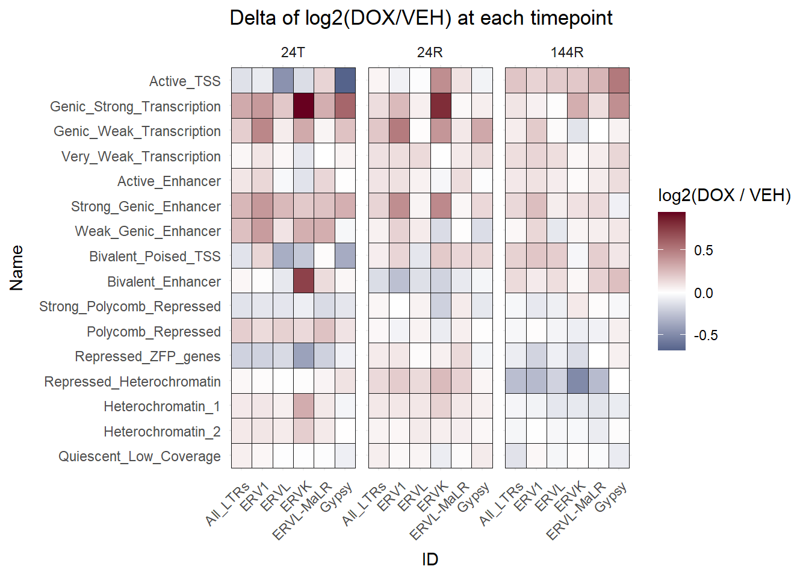
count_ERV1_file <- read_table("data/Bed_exports/repeatmasker_sets/ERV1/count_ERV1_file.txt",
col_names = FALSE) %>% dplyr::rename("count"=X1, "name"=X2) %>%
mutate(break_list = factor(paste0("Group", ceiling(row_number() / 20)))) %>%
mutate(name= str_remove(name, ".bed*$")) %>%
slice_head(n = length(.$name)-1)
# order_LTR_ERV1 <- c("All_LTRs","ERV1","ERVL","ERVK","ERVL-MaLR","Gypsy","LTR")
plots_LTR_ERV1_long <-all_LTR_ERV1_states %>%
mutate(`State (Emission order)` = as.character(`State (Emission order)`),
`State (Emission order)` = case_when(
`State (Emission order)` %in% as.character(1:16) ~ paste0("E", `State (Emission order)`),
TRUE ~ `State (Emission order)`)) %>%
mutate(`State (Emission order)` = factor(`State (Emission order)`,levels = c(paste0("E",1:16), "Base"))) %>%
filter(`State (Emission order)` != "Base")%>%
mutate(Name = factor(Name,
levels = unique(Name[order(recode)]))) %>%
pivot_longer(., -c(`State (Emission order)`,group, recode, Name), names_to = "Identity", values_to="Fold_enrichment") %>%
mutate(group=factor(group,levels=c("VEH_24T","VEH_24R","VEH_144R","DOX_24T", "DOX_24R", "DOX_144R"))) %>%
mutate(ID = case_when(
Identity == "LTR_rptmasker.bed" ~ paste("All_LTRs"),
str_detect(Identity, ".bed") ~ str_remove(Identity, ".bed*$"),
TRUE ~ Identity))%>%
dplyr::filter(!(ID %in% list("Genome %","ZFP_proteins.bed"))) %>%
# mutate(ID = factor(ID,
# levels = order_LTR))%>%
group_by(ID) %>% # i.e. per annotation column
mutate(log2_FE = log2(Fold_enrichment + 1e-8)) %>%
separate(group, into = c("trt","time"), remove = FALSE) %>%
group_by(time, ID ,Name) %>%
summarise(
delta_log2FE =
mean(log2_FE[trt == "DOX"], na.rm = TRUE) -
mean(log2_FE[trt == "VEH"], na.rm = TRUE),
.groups = "drop") %>%
mutate(time=factor(time, levels=c("24T","24R","144R"))) %>%
left_join(count_ERV1_file,by=c("ID"="name")) %>%
na.omit()
groups <- (unique(plots_LTR_ERV1_long$break_list)) %>% as.character()
for (g in groups) {
p <- ggplot(
plots_LTR_ERV1_long %>% dplyr::filter(break_list == g),
aes(x = ID, y = Name, fill = delta_log2FE)
) +
geom_tile(color = "grey9", linewidth = 0.1) +
scale_fill_gradient2(
low = "#053061",
mid = "white",
high = "#67001F",
midpoint = 0,
name = "log2(DOX / VEH)"
) +
facet_wrap(~time, nrow = 1) +
scale_y_discrete(limits = rev) +
theme_minimal() +
theme(axis.text.x = element_text(angle = 45, hjust = 1)) +
ggtitle(paste("Delta log2(DOX/VEH) — Group", g))
print(p)
}


groups2 <- c("MER61E_ERV1_LTR","LTR10E_ERV1_LTR","MER61C_ERV1_LTR","MER61D_ERV1_LTR","LTR10B1_ERV1_LTR","LTR10B2_ERV1_LTR", "HERV1_LTRa_ERV1_LTR")
ggplot(
plots_LTR_ERV1_long %>% dplyr::filter(ID %in% groups2),
aes(x = ID, y = Name, fill = delta_log2FE)
) +
# geom_tile(color = "grey9", linewidth = 0.1) +
# scale_fill_gradient2(
# low = "#053061",
# mid = "white",
# high = "#67001F",
# midpoint = 0,
# name = "log2(DOX / VEH)"
# ) +
geom_tile(color = "grey9", linewidth = 0.1) +
scale_fill_gradient2(
low = "#053061",
mid = "white",
high = "#67001F",
midpoint = 0,
limits = c(-5, 5),
oob = scales::squish,
breaks = c(-5, -2.5, 0, 2.5, 5),
name = "log2(DOX / VEH)") +
facet_wrap(~time, nrow = 1) +
scale_y_discrete(limits = rev) +
theme_minimal() +
theme(axis.text.x = element_text(angle = 45, hjust = 1)) +
ggtitle(paste("Delta log2(DOX/VEH) — Group extra"))
This is too many, so now I will filter by only those that are found in H3K27ac data.
anno_H3K27ac_summits <- readRDS("data/TE_annotation/H3K27ac_annotated_summit_TE_overlaps.RDS")
filtered_ac_ERV1s <- anno_H3K27ac_summits %>%
dplyr::filter(repFamily=="ERV1") %>%
distinct(repName)
filtered_plots <- plots_LTR_ERV1_long %>%
mutate(ID=str_remove(ID,"_ERV1_LTR$")) %>%
dplyr::filter(ID %in% filtered_ac_ERV1s$repName)
for (g in groups) {
p <- ggplot(
plots_LTR_ERV1_long %>% dplyr::filter(break_list == g),
aes(x = ID, y = Name, fill = delta_log2FE)
) +
geom_tile(color = "grey9", linewidth = 0.1) +
scale_fill_gradient2(
low = "#053061",
mid = "white",
high = "#67001F",
midpoint = 0,
name = "log2(DOX / VEH)"
) +
facet_wrap(~time, nrow = 1) +
scale_y_discrete(limits = rev) +
theme_minimal() +
theme(axis.text.x = element_text(angle = 45, hjust = 1)) +
ggtitle(paste("Delta log2(DOX/VEH) —", g,"\nFamilies found in H3K27ac summits"))
print(p)
}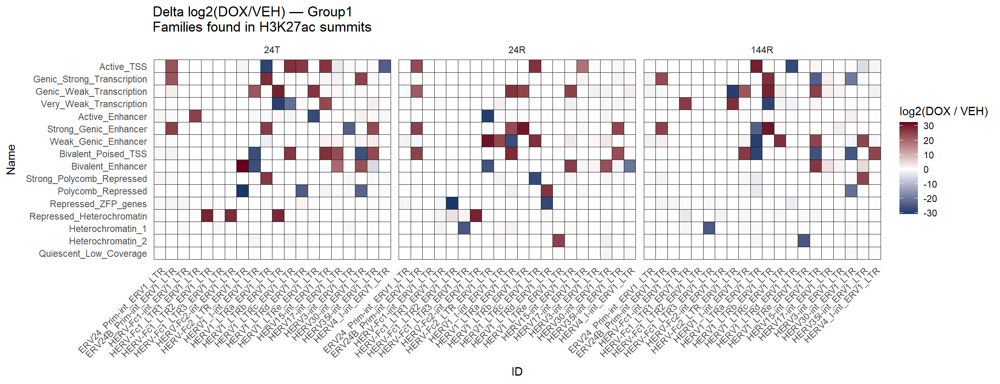
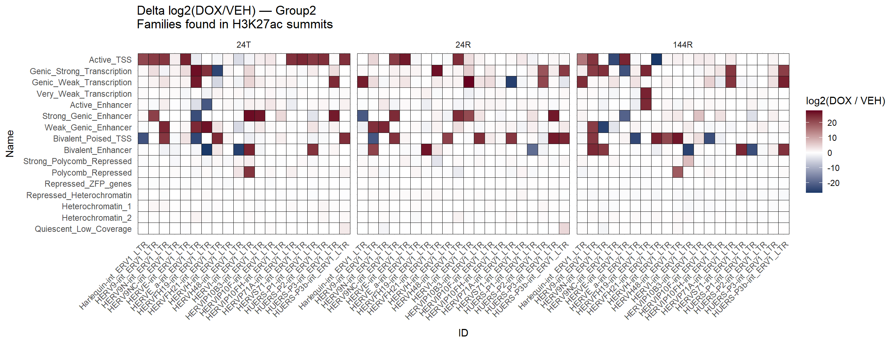
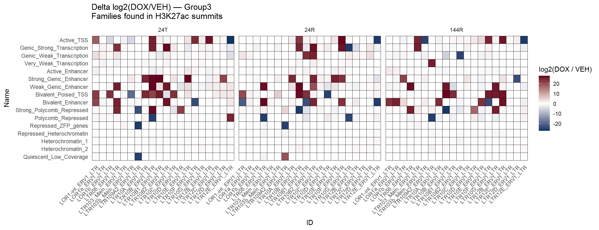
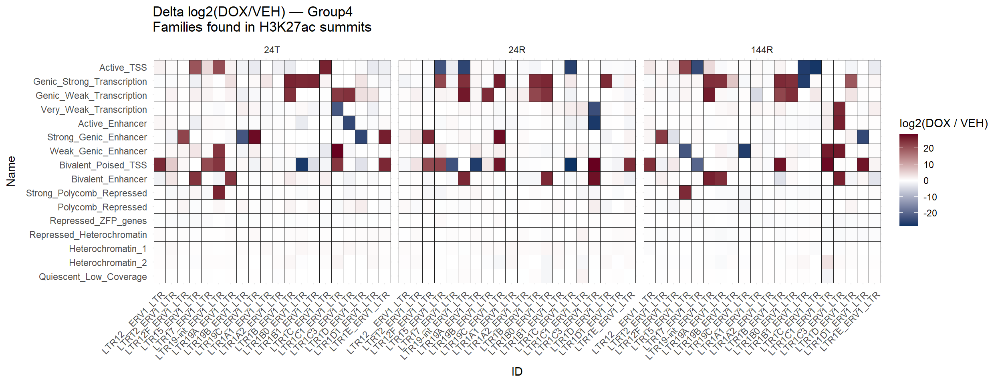
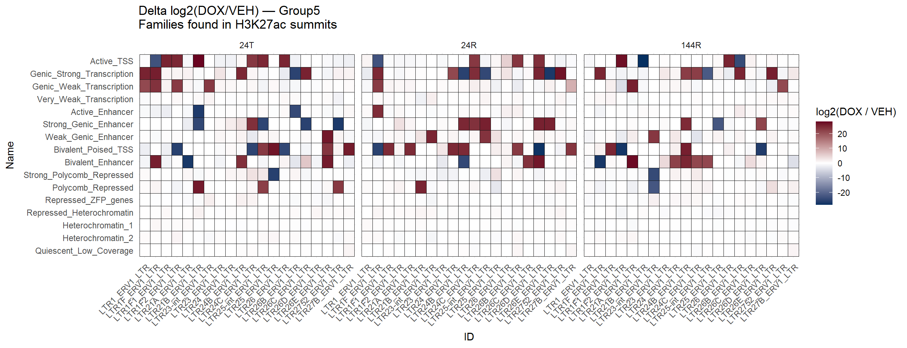
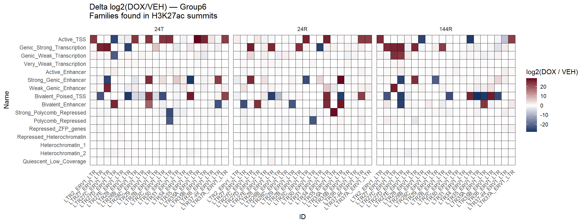
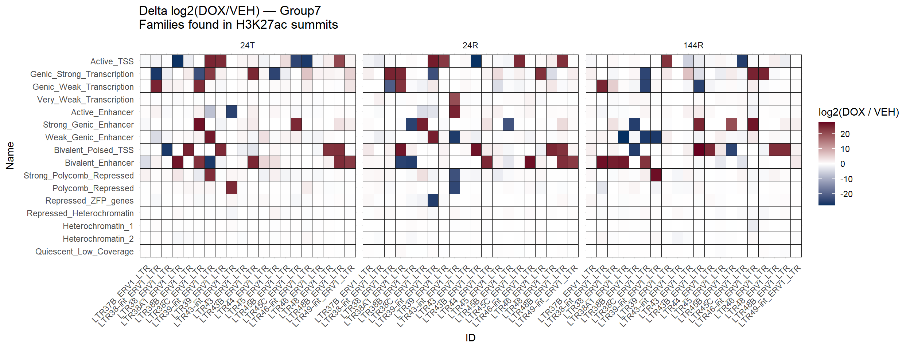
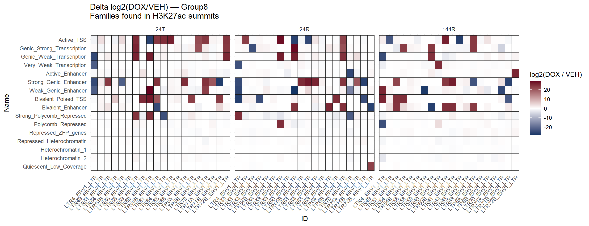
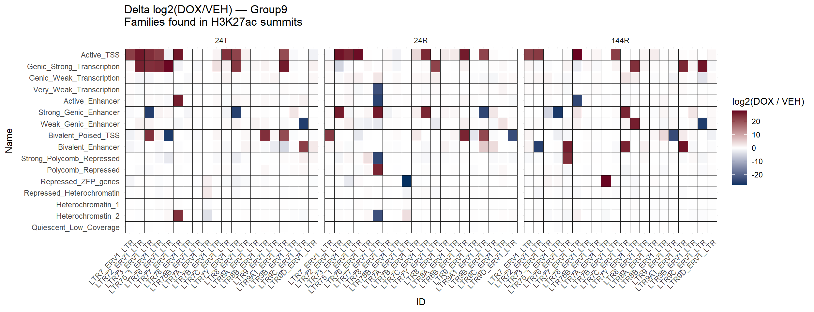
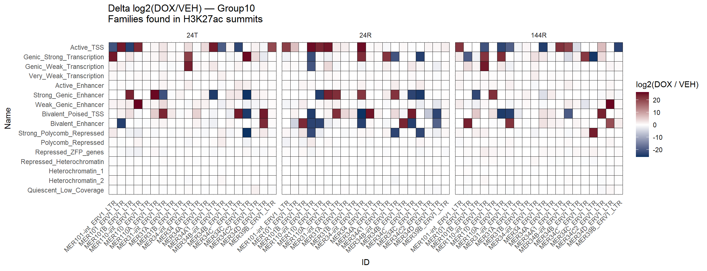
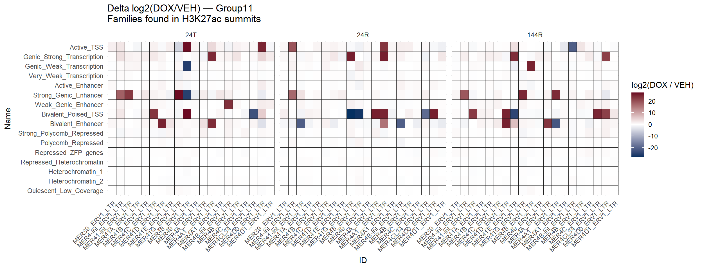
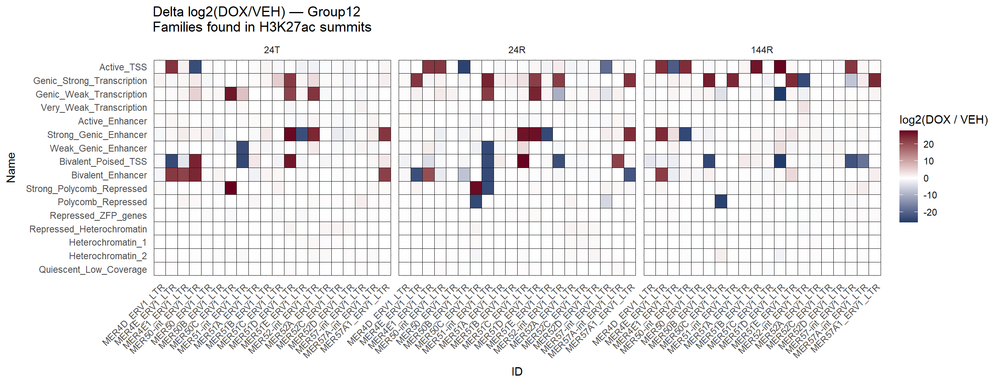
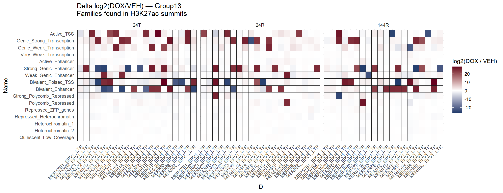
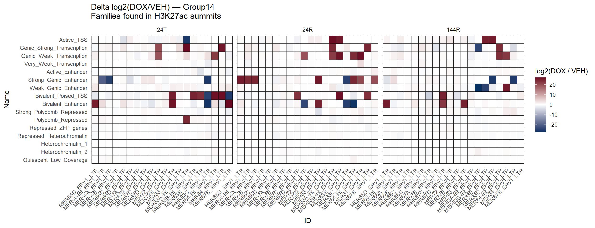
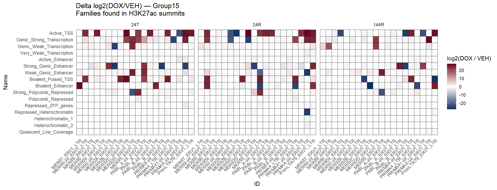
ATAC and cardiac enhancer enrichment
ATAC_long_file <- all_ATAC_states %>%
filter(`State (Emission order)` != "Base") %>%
pivot_longer(., -c(`State (Emission order)`,group, recode, Name), names_to = "Identity", values_to="Fold_enrichment") %>%
mutate(group=factor(group,levels=c("VEH_24T","VEH_24R","VEH_144R","DOX_24T", "DOX_24R", "DOX_144R")),
`State (Emission order)`=factor(`State (Emission order)`, levels = paste0("E",1:16)))
ATAC_long_file %>%
# dplyr::filter(stringr::str_detect(Identity, "SCREEN")) %>%
group_by(Identity) %>% # i.e. per annotation column
mutate(
FE_min = min(Fold_enrichment, na.rm = TRUE),
FE_max = max(Fold_enrichment, na.rm = TRUE),
chromhmm_scaled = (Fold_enrichment - FE_min) / (FE_max - FE_min)
) %>%
ggplot(.,aes(x=Identity,y=`State (Emission order)`, fill=chromhmm_scaled))+
geom_tile(color = "grey9",
lwd = .1,
linetype = 1)+
scale_fill_gradient(
low = "white",
high = "#08306B",
limits = c(0, 1), # <- KEY
oob = scales::squish,
na.value = "white", # <- this sets NAs to white
name = "transformed scale"
)+
theme(axis.text.x = element_text(angle = 45, hjust = 1))+
facet_wrap(~group, nrow=1, ncol=6)+
scale_y_discrete(limits=rev)+
ggtitle("CAR/DAR and cardiac Enhancer types enrichment across states")+
coord_fixed()
| Version | Author | Date |
|---|---|---|
| 3facb4b | reneeisnowhere | 2026-02-02 |
sessionInfo()R version 4.4.2 (2024-10-31 ucrt)
Platform: x86_64-w64-mingw32/x64
Running under: Windows 11 x64 (build 26200)
Matrix products: default
locale:
[1] LC_COLLATE=English_United States.utf8
[2] LC_CTYPE=English_United States.utf8
[3] LC_MONETARY=English_United States.utf8
[4] LC_NUMERIC=C
[5] LC_TIME=English_United States.utf8
time zone: America/Chicago
tzcode source: internal
attached base packages:
[1] grid stats4 stats graphics grDevices utils datasets
[8] methods base
other attached packages:
[1] ggforce_0.5.0 cowplot_1.2.0 regioneR_1.38.0
[4] ChIPseeker_1.42.1 readxl_1.4.5 DT_0.34.0
[7] ggrepel_0.9.8 rtracklayer_1.66.0 genomation_1.38.0
[10] plyranges_1.26.0 GenomicRanges_1.58.0 GenomeInfoDb_1.42.3
[13] IRanges_2.40.1 S4Vectors_0.44.0 BiocGenerics_0.52.0
[16] lubridate_1.9.5 forcats_1.0.1 stringr_1.6.0
[19] dplyr_1.2.1 purrr_1.2.2 readr_2.2.0
[22] tidyr_1.3.2 tibble_3.3.1 ggplot2_4.0.3
[25] tidyverse_2.0.0 workflowr_1.7.2
loaded via a namespace (and not attached):
[1] splines_4.4.2
[2] later_1.4.8
[3] BiocIO_1.16.0
[4] bitops_1.0-9
[5] ggplotify_0.1.3
[6] R.oo_1.27.1
[7] cellranger_1.1.0
[8] polyclip_1.10-7
[9] XML_3.99-0.23
[10] lifecycle_1.0.5
[11] rprojroot_2.1.1
[12] vroom_1.7.1
[13] processx_3.9.0
[14] lattice_0.22-9
[15] MASS_7.3-65
[16] magrittr_2.0.5
[17] sass_0.4.10
[18] rmarkdown_2.31
[19] jquerylib_0.1.4
[20] yaml_2.3.12
[21] plotrix_3.8-14
[22] httpuv_1.6.17
[23] otel_0.2.0
[24] ggtangle_0.1.2
[25] DBI_1.3.0
[26] RColorBrewer_1.1-3
[27] abind_1.4-8
[28] zlibbioc_1.52.0
[29] R.utils_2.13.0
[30] RCurl_1.98-1.18
[31] yulab.utils_0.2.4
[32] tweenr_2.0.3
[33] rappdirs_0.3.4
[34] git2r_0.36.2
[35] GenomeInfoDbData_1.2.13
[36] enrichplot_1.26.6
[37] tidytree_0.4.7
[38] codetools_0.2-20
[39] DelayedArray_0.32.0
[40] DOSE_4.0.1
[41] tidyselect_1.2.1
[42] aplot_0.2.9
[43] UCSC.utils_1.2.0
[44] farver_2.1.2
[45] matrixStats_1.5.0
[46] GenomicAlignments_1.42.0
[47] jsonlite_2.0.0
[48] tools_4.4.2
[49] treeio_1.30.0
[50] TxDb.Hsapiens.UCSC.hg19.knownGene_3.2.2
[51] Rcpp_1.1.1-1.1
[52] glue_1.8.1
[53] SparseArray_1.6.2
[54] xfun_0.57
[55] qvalue_2.38.0
[56] MatrixGenerics_1.18.1
[57] withr_3.0.2
[58] fastmap_1.2.0
[59] boot_1.3-32
[60] callr_3.7.6
[61] caTools_1.18.3
[62] digest_0.6.39
[63] timechange_0.4.0
[64] R6_2.6.1
[65] gridGraphics_0.5-1
[66] seqPattern_1.38.0
[67] colorspace_2.1-2
[68] GO.db_3.20.0
[69] gtools_3.9.5
[70] dichromat_2.0-0.1
[71] RSQLite_3.52.0
[72] R.methodsS3_1.8.2
[73] utf8_1.2.6
[74] generics_0.1.4
[75] data.table_1.18.4
[76] httr_1.4.8
[77] htmlwidgets_1.6.4
[78] S4Arrays_1.6.0
[79] whisker_0.4.1
[80] pkgconfig_2.0.3
[81] gtable_0.3.6
[82] blob_1.3.0
[83] S7_0.2.2
[84] impute_1.80.0
[85] XVector_0.46.0
[86] htmltools_0.5.9
[87] fgsea_1.32.4
[88] scales_1.4.0
[89] Biobase_2.66.0
[90] png_0.1-9
[91] ggfun_0.2.0
[92] knitr_1.51
[93] rstudioapi_0.18.0
[94] tzdb_0.5.0
[95] reshape2_1.4.5
[96] rjson_0.2.23
[97] nlme_3.1-169
[98] curl_7.1.0
[99] cachem_1.1.0
[100] KernSmooth_2.23-26
[101] parallel_4.4.2
[102] AnnotationDbi_1.68.0
[103] restfulr_0.0.16
[104] pillar_1.11.1
[105] vctrs_0.7.3
[106] gplots_3.3.0
[107] promises_1.5.0
[108] evaluate_1.0.5
[109] GenomicFeatures_1.58.0
[110] cli_3.6.6
[111] compiler_4.4.2
[112] Rsamtools_2.22.0
[113] rlang_1.2.0
[114] crayon_1.5.3
[115] labeling_0.4.3
[116] getPass_0.2-4
[117] plyr_1.8.9
[118] fs_2.1.0
[119] stringi_1.8.7
[120] gridBase_0.4-7
[121] BiocParallel_1.40.2
[122] Biostrings_2.74.1
[123] lazyeval_0.2.3
[124] GOSemSim_2.32.0
[125] Matrix_1.7-5
[126] BSgenome_1.74.0
[127] hms_1.1.4
[128] patchwork_1.3.2
[129] bit64_4.8.0
[130] KEGGREST_1.46.0
[131] SummarizedExperiment_1.36.0
[132] igraph_2.3.1
[133] memoise_2.0.1
[134] bslib_0.10.0
[135] ggtree_3.14.0
[136] fastmatch_1.1-8
[137] bit_4.6.0
[138] ape_5.8-1